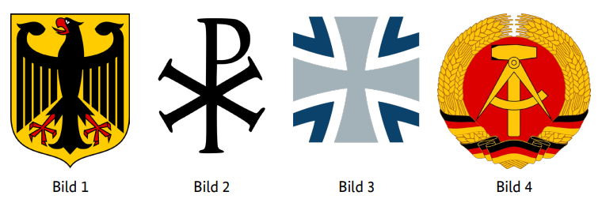
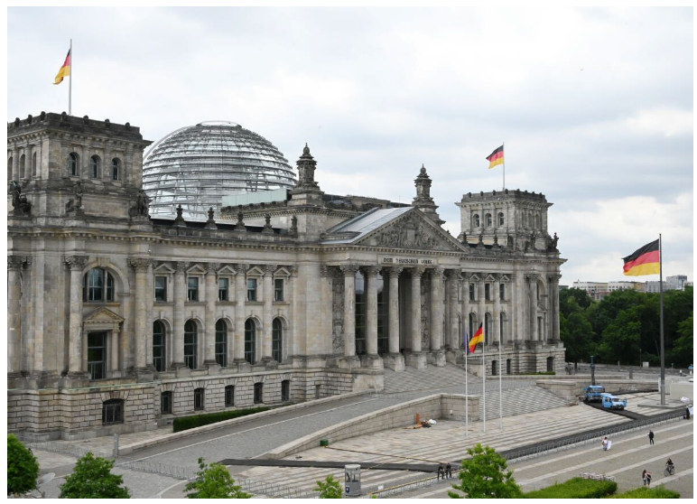
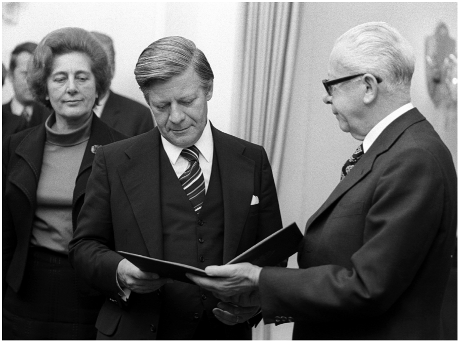

Diese Website verwendet Cookies, um Inhalte zu personalisieren und Zugriffe zu analysieren. Mehr erfahren
Stand: 07.05.2025
Sprache auswählen: Bitte wählen Sie Ihre Sprache über das Zahnrad-Symbol (⚙️) oben rechts auf der Seite aus.
1. In Deutschland dürfen Menschen offen etwas gegen die Regierung sagen, weil … У Німеччині люди можуть відкрито сказати щось проти уряду, бо … In Germany people are allowed to openly say something against the government because … في ألمانيا يُسمح للناس بالتعبير بحرية ضد الحكومة لأن … Almanya'da insanlar hükümete karşı açıkça bir şey söyleyebilirler çünkü … В Германия хората могат открито да кажат нещо срещу правителството, защото … در آلمان به مردم اجازه داده میشود بهطور آشکار چیزی علیه دولت بگویند زیرا … U Njemačkoj ljudi smiju otvoreno reći nešto protiv vlade jer … Во Германија луѓето можат отворено да кажат нешто против владата затоа што … W Niemczech ludzie mogą otwarcie powiedzieć coś przeciw rządowi, ponieważ … În Germania oamenilor li se permite să spună deschis ceva împotriva guvernului deoarece … In Germania le persone possono dire apertamente qualcosa contro il governo perché … जर्मनी में लोगों को सरकार के खिलाफ खुलकर कुछ कहने की अनुमति है क्योंकि …
2. In Deutschland können Eltern bis zum 14. Lebensjahr ihres Kindes entscheiden, ob es in der Schule am … В Німеччині батьки до досягнення дитиною 14 років можуть вирішити, чи братиме вона участь у … In Germany, parents can decide until their child is 14 whether they participate in … at school. في ألمانيا يمكن للوالدين حتى بلوغ طفلهم 14 عامًا أن يقررا ما إذا كان سيشارك في … في المدرسة. Almanya’da ebeveynler, çocukları 14 yaşına gelene kadar okulda … katılıp katılmayacağına karar verebilir. В Германия родителите могат до навършването на 14 години на детето си да решат дали то ще участва в … в училище. در آلمان والدین میتوانند تا قبل از ۱۴ سالگی فرزندشان تصمیم بگیرند که آیا او در … در مدرسه شرکت کند یا خیر. U Njemačkoj roditelji mogu do 14. rođendana djeteta odlučiti hoće li ono sudjelovati u … u školi. Во Германија, родителите до 14-годишна возраст на своето дете можат да одлучат дали тоа ќе учествува во … во училиште. W Niemczech rodzice mogą do ukończenia przez dziecko 14 lat zdecydować, czy będzie uczestniczyć w … w szkole. În Germania, părinții pot decide până când copilul lor împlinește 14 ani dacă va participa la … la școală. In Germania, i genitori possono decidere fino ai 14 anni del figlio se partecipa a … a scuola. जर्मनी में, माता-पिता अपने बच्चे के 14 साल की उम्र तक यह निर्णय ले सकते हैं कि वह स्कूल में … में भाग लेगा या नहीं।
3. Deutschland ist ein Rechtsstaat. Was ist damit gemeint? Німеччина є правовою державою. Що мається на увазі під цим? Germany is a state governed by law. What does that mean? ألمانيا دولة تحكمها القوانين. ماذا يعني ذلك؟ Almanya hukuk devleti demektir. Bu ne anlama geliyor? Германия е правова държава. Какво означава това? آلمان یک کشور قانونگرا است. این چه معنایی دارد؟ Njemačka je pravna država. Šta to znači? Германија е правна држава. Што значи тоа? Niemcy są państwem prawa. Co to oznacza? Germania este un stat de drept. Ce înseamnă asta? La Germania è uno stato di diritto. Cosa significa? जर्मनी एक कानूनी राज्य है। इसका क्या मतलब है?
4. Welches Recht gehört zu den Grundrechten in Deutschland? Яке право є одним із основних у Німеччині? Which right is one of the fundamental rights in Germany? أي حق هو أحد الحقوق الأساسية في ألمانيا؟ Almanya’da temel haklardan biri olan hak hangisidir? Кое право е едно от основните права в Германия? کدام حق یکی از حقوق اساسی در آلمان است؟ Koje pravo je jedno od osnovnih prava u Njemačkoj? Кое право е едно од темелните права во Германија? Które prawo jest jednym z praw podstawowych w Niemczech? Care drept este unul dintre drepturile fundamentale din Germania? Quale diritto è uno dei diritti fondamentali in Germania? कौन सा अधिकार जर्मनी में मौलिक अधिकारों में से एक है?
5. Wahlen in Deutschland sind frei. Was bedeutet das? Вибори в Німеччині вільні. Що це означає? Elections in Germany are free. What does that mean? الانتخابات في ألمانيا حرة. ماذا يعني ذلك؟ Almanya'da seçimler özgürdür. Bu ne anlama geliyor? Изборите в Германия са свободни. Какво означава това? انتخابات در آلمان آزاد هستند. این چه معنایی دارد؟ Izbori u Njemačkoj su slobodni. Šta to znači? Изборите во Германија се слободни. Што значи тоа? Wybory w Niemczech są wolne. Co to oznacza? Alegerile în Germania sunt libere. Ce înseamnă asta? Le elezioni in Germania sono libere. Cosa significa questo? जर्मनी में चुनाव स्वतंत्र हैं। इसका क्या मतलब है?
6. Wie heißt die deutsche Verfassung? Як називається німецька конституція? What is the name of the German constitution? ما اسم الدستور الألماني؟ Alman anayasasının adı nedir? Как се нарича германската конституция? نام قانون اساسی آلمان چیست؟ Kako se zove njemački ustav? Како се вика германскиот устав? Jak nazywa się niemiecka konstytucja? Cum se numește constituția germană? Come si chiama la costituzione tedesca? जर्मन संविधान का नाम क्या है?
7. Welches Recht gehört zu den Grundrechten, die nach der deutschen Verfassung garantiert werden? Das Recht auf … Яке право є одним із основних прав, які гарантуються Конституцією Німеччини? Право на … Which right is one of the fundamental rights guaranteed by the German Basic Law? The right to … أي حق هو أحد الحقوق الأساسية المضمونة بموجب القانون الأساسي الألماني؟ الحق في … Hangi hak, Alman Temel Yasası tarafından garanti edilen temel haklardan biridir? Recht auf … Кое право е едно от основните права, гарантирани от Основния закон на Германия? Правото на … کدام حق یکی از حقوق اساسی تضمینشده توسط قانون اساسی آلمان است؟ حق در … Koje pravo je jedno od osnovnih prava zajamčenih Njemačkim osnovnim zakonom? Pravo na … Кое право е едно од темелните права загарантирани со Основниот закон на Германија? Право на … Które prawo jest jednym z praw podstawowych gwarantowanych przez niemiecką Ustawę Zasadniczą? Prawo do … Care drept este unul dintre drepturile fundamentale garantate de Legea Fundamentală a Germaniei? Dreptul la … Quale diritto è uno dei diritti fondamentali garantiti dalla Legge Fondamentale della Germania? Il diritto a … कौन सा अधिकार जर्मनी के बुनियादी कानून द्वारा गारंटीकृत मौलिक अधिकारों में से एक है? अधिकार …
8. Was steht nicht im Grundgesetz von Deutschland? Що немає у Конституції Німеччини? What is not in the Basic Law of Germany? ما الذي لا يوجد في القانون الأساسي لألمانيا؟ Almanya Temel Yasasında neler yoktur? Какво не е включено в Основния закон на Германия? چه چیزی در قانون اساسی آلمان وجود ندارد؟ Šta nije sadržano u osnovnom zakonu Njemačke? Што не е вклучено во Основниот закон на Германија? Czego nie ma w Ustawie Zasadniczej Niemiec? Ce nu este inclus în Legea Fundamentală a Germaniei? Cosa non è incluso nella Legge Fondamentale della Germania? जर्मनी के बुनियादी कानून में क्या शामिल नहीं है?
9. Welches Grundrecht gilt in Deutschland nur für Ausländer / Ausländerinnen? Das Grundrecht auf … Яке основне право поширюється в Німеччині лише на іноземців? Основне право на … Which fundamental right applies in Germany only to foreigners? The fundamental right to … أي حق أساسي ينطبق في ألمانيا فقط على الأجانب؟ الحق الأساسي في … Almanya’da hangi temel hak sadece yabancılar için geçerlidir? … hakkı Кое основно право важи в Германия само за чужденци? Основното право на … کدام حق اساسی در آلمان فقط برای اتباع خارجی اعمال میشود؟ حق اساسی برای … Koje temeljno pravo vrijedi u Njemačkoj samo za strance? Pravo na … Кое темелно право важи во Германија само за странци? Право на … Które prawo podstawowe obowiązuje w Niemczech wyłącznie cudzoziemców? Prawo do … Care drept fundamental se aplică în Germania doar străinilor? Dreptul fundamental la … Quale diritto fondamentale si applica in Germania solo agli stranieri? Il diritto fondamentale a … कौन सा मौलिक अधिकार जर्मनी में केवल विदेशियों पर लागू होता है? … का मौलिक अधिकार
10. Was ist mit dem deutschen Grundgesetz vereinbar? Що відповідає Основному закону Німеччини? What is compatible with the German Basic Law? ما هو المتوافق مع القانون الأساسي الألماني؟ Alman Temel Yasası ile uyumlu olan nedir? Кое е съвместимо с Основния закон на Германия? چه چیزی با قانون اساسی آلمان سازگار است؟ Šta je u skladu s njemačkim Grundgesetzom? Што е во согласност со Основниот закон на Германија? Co jest zgodne z niemiecką ustawą zasadniczą? Ce este compatibil cu Legea Fundamentală a Germaniei? Cosa è compatibile con la Legge Fondamentale tedesca? जर्मन बुनियादी कानून के साथ क्या संगत है?
11. Wie wird die Verfassung der Bundesrepublik Deutschland genannt? Як називається конституція Федеративної Республіки Німеччина? What is the constitution of the Federal Republic of Germany called? بأي اسم تُسمى دستور جمهورية ألمانيا الاتحادية؟ Federal Almanya Cumhuriyeti anayasasına ne ad verilir? Как се нарича конституцията на Федерална република Германия? قانون اساسی جمهوری فدرال آلمان چه نام دارد؟ Kako se naziva ustav Savezne Republike Njemačke? Како се вика уставот на Сојузна Република Германија? Jak nazywa się konstytucja Republiki Federalnej Niemiec? Cum se numește constituția Republicii Federale Germania? Come si chiama la costituzione della Repubblica Federale di Germania? जर्मनी के संघीय गणराज्य के संविधान को क्या कहा जाता है?
12. Eine Partei im Deutschen Bundestag möchte die Pressefreiheit abschaffen. Ist das möglich? Партія в німецькому Бундестазі хоче скасувати свободу преси. Чи можливо це? A party in the German Bundestag wants to abolish freedom of the press. Is that possible? حزب في البوندستاغ الألماني يريد إلغاء حرية الصحافة. هل هذا ممكن؟ Alman Bundestag’ındaki bir parti basın özgürlüğünü kaldırmak istiyor. Bu mümkün mü? Партия в немския Бундестаг иска да премахне свободата на печата. Възможно ли е това? یک حزب در بوندستاگ آلمان میخواهد آزادی مطبوعات را لغو کند. آیا این ممکن است؟ Stranka u njemačkom Bundestagu želi ukinuti slobodu štampe. Je li to moguće? Партија во германскиот Бундестаг сака да ја укине слободата на печатот. Дали е тоа можно? Partia w niemieckim Bundestagu chce znieść wolność prasy. Czy to możliwe? O formațiune în Bundestag-ul german vrea să desființeze libertatea presei. Este posibil? Un partito nel Bundestag tedesco vuole abolire la libertà di stampa. È possibile? जर्मन बंडेस्टाग की एक पार्टी प्रेस की स्वतंत्रता को समाप्त करना चाहती है। क्या यह संभव है?
13. Im Parlament steht der Begriff „Opposition“ für… У парламенті термін «опозиція» означає … In Parliament, the term “Opposition” stands for … في البرلمان، يعني مصطلح "المعارضة" … Parlamento'da "Muhalefet" terimi neyi ifade eder … В парламента, терминът "опозиция" означава … در پارلمان، اصطلاح «اپوزیسیون» به چه معناست … U parlamentu, pojam "opozicija" označava … Во парламентот, терминот „опозиција“ значи … W parlamencie termin „opozycja” oznacza … În parlament, termenul „opoziție” înseamnă … Nel parlamento, il termine “opposizione” indica … संसद में “विपक्ष” शब्द का क्या अर्थ है …
14. Meinungsfreiheit in Deutschland heißt, dass ich … Свобода слова в Німеччині означає, що я … Freedom of expression in Germany means that I … حرية التعبير في ألمانيا تعني أنني … Almanya’da ifade özgürlüğü demek benim için … Свободата на изразяване в Германия означава, че аз … آزادی بیان در آلمان به این معنی است که من … Sloboda izražavanja u Njemačkoj znači da ja … Слобода на изразување во Германија значи дека јас … Wolność wypowiedzi w Niemczech oznacza, że ja … Libertatea de exprimare în Germania înseamnă că eu … La libertà di espressione in Germania significa che io … जर्मनी में अभिव्यक्ति की स्वतंत्रता का अर्थ है कि मैं …
15. Was verbietet das deutsche Grundgesetz? Що забороняє німецька конституція? What does the German Basic Law prohibit? ما الذي يحظره القانون الأساسي الألماني؟ Alman Temel Yasası neyi yasaklar? Какво забранява Основният закон на Германия? قانون اساسی آلمان چه چیزی را ممنوع میکند؟ Šta zabranjuje njemački Grundgesetz? Што го забранува Основниот закон на Германија? Co zabrania niemiecka Ustawa Zasadnicza? Ce interzice Legea Fundamentală a Germaniei? Cosa proibisce la Legge Fondamentale tedesca? जर्मन बुनियादी कानून क्या निषेध करता है?
16. Wann ist die Meinungsfreiheit in Deutschland eingeschränkt? Коли свобода слова в Німеччині обмежена? When is freedom of expression restricted in Germany? متى يتم تقييد حرية التعبير في ألمانيا؟ Almanya’da ifade özgürlüğü ne zaman kısıtlanır? Кога свободата на изразяване е ограничена в Германия? آزادی بیان در آلمان چه زمانی محدود میشود؟ Kada je sloboda izražavanja ograničena u Njemačkoj? Кога е ограничена слободата на изразување во Германија? Kiedy wolność wypowiedzi jest ograniczona w Niemczech? Când este limitată libertatea de expresie în Germania? Quando la libertà di espressione è limitata in Germania? जर्मनी में अभिव्यक्ति की स्वतंत्रता कब प्रतिबंधित होती है?
17. Die deutschen Gesetze verbieten … Німецькі закони забороняють … German laws prohibit … القوانين الألمانية تحظر … Alman yasaları şu yasaktır … Немските закони забраняват … قوانین آلمان ممنوع میکنند … Njemački zakoni zabranjuju … Германските закони го забрануваат … Niemieckie prawo zabrania … Legile germane interzic … Le leggi tedesche vietano … जर्मन कानून निषिद्ध करते हैं …
18. Welches Grundrecht ist in Artikel 1 des Grundgesetzes der Bundesrepublik Deutschland garantiert? Яке основне право гарантується у статті 1 Основного закону Федеративної Республіки Німеччина? Which fundamental right is guaranteed in Article 1 of the Basic Law of the Federal Republic of Germany? ما هو الحق الأساسي المكفول في المادة 1 من القانون الأساسي لجمهورية ألمانيا الاتحادية؟ Almanya Federal Cumhuriyeti Temel Kanunu'nun 1. maddesinde hangi temel hak garanti altına alınmıştır? Кое основно право е гарантирано в член 1 от Основния закон на Федерална република Германия? کدام حق اساسی در ماده 1 قانون اساسی جمهوری فدرال آلمان تضمین شده است؟ Koje temeljno pravo je zajamčeno u članku 1 Temeljnog zakona Savezne Republike Njemačke? Кое основно право е загарантирано во член 1 од Основниот закон на Федерална Република Германија? Które prawo podstawowe jest zagwarantowane w artykule 1 Ustawy Zasadniczej Republiki Federalnej Niemiec? Ce drept fundamental este garantat în articolul 1 din Legea Fundamentală a Republicii Federale Germania? Quale diritto fondamentale è garantito all'articolo 1 della Legge Fondamentale della Repubblica Federale di Germania? जर्मनी के संघीय गणराज्य के मौलिक कानून के अनुच्छेद 1 में कौन सा मूलभूत अधिकार सुनिश्चित किया गया है?
19. Was versteht man unter dem Recht der „Freizügigkeit“ in Deutschland? Що мається на увазі під правом «вільного пересування» у Німеччині? What is meant by the right of “freedom of movement” in Germany? ماذا يعني الحق في “حرية التنقل” في ألمانيا؟ Almanya’da “serbest dolaşım” hakkıyla ne kastedilir? Какво означава правото на „свободно придвижване“ в Германия? حق «آزادی جابجایی» در آلمان به چه معناست؟ Šta znači pravo na “slobodu kretanja” u Njemačkoj? Што значи правото на „слобода на движење“ во Германија? Co oznacza prawo do „swobodnego przemieszczania się” w Niemczech? Ce înseamnă dreptul la „libera circulație” în Germania? Cosa significa il diritto di “libera circolazione” in Germania? जर्मनी में “फ्रीज़्यूजिग्काइट” का अधिकार अर्थात “आज़ादी से आवागमन” का क्या मतलब है?
20. Eine Partei in Deutschland verfolgt das Ziel, eine Diktatur zu errichten. Sie ist dann … Якщо партія в Німеччині має на меті встановлення диктатури, вона тоді … If a party in Germany aims to establish a dictatorship, it is then … إذا كانت حزب في ألمانيا يهدف إلى إقامة ديكتاتورية، فإنه يكون … Almanya’da bir parti bir diktatörlük kurmayı amaçlıyorsa, o zaman … Ако партия в Германия цели да установи диктатура, тя тогава … اگر حزبی در آلمان قصد برقراری دیکتاتوری داشته باشد، آن حزب … است Ako stranka u Njemačkoj teži uspostavljanju diktature, tada je ona … Ако партија во Германија цели да воспостави диктатура, таа тогаш е … Jeśli partia w Niemczech dąży do ustanowienia dyktatury, to jest wtedy … Dacă un partid în Germania urmărește să instaureze o dictatură, atunci este … Se un partito in Germania mira a instaurare una dittatura, allora è … यदि जर्मनी में कोई पार्टी तानाशाही स्थापित करने का लक्ष्य रखती है, तो वह तब … है
21. Welches ist das Wappen der Bundesrepublik Deutschland?

Який герб Федеративної Республіки Німеччина?
Which coat of arms belongs to the Federal Republic of Germany?
ما شعار الجمهورية الاتحادية لألمانيا؟
Federal Almanya Cumhuriyeti'nin arma hangisidir?
Кой герб принадлежи на Федерална република Германия?
کدام نشان متعلق به جمهوری فدرال آلمان است؟
Koji amblem pripada Saveznoj Republici Njemačkoj?
Кој грб му припаѓа на Сојузна Република Германија?
Który herb należy do Republiki Federalnej Niemiec?
Care stemă aparține Republicii Federale Germania?
Quale stemma appartiene alla Repubblica Federale di Germania?
जर्मनी के संघीय गणराज्य का कौन सा राज्य चिन्ह है?
22. Was für eine Staatsform hat Deutschland? Яку форму державного правління має Німеччина? What form of government does Germany have? ما هو شكل الحكم في ألمانيا؟ Almanya'nın hangi yönetim biçimi vardır? Каква форма на управление има Германия? آلمان چه فرم حکومتی دارد؟ Koji oblik vlasti ima Njemačka? Каква форма на владеење има Германија? Jaka forma rządów panuje w Niemczech? Ce formă de guvernare are Germania? Che forma di governo ha la Germania? जर्मनी का शासन कौन सा रूप है?
23. In Deutschland sind die meisten Erwerbstätigen … У Німеччині більшість працівників … In Germany, most employed persons … في ألمانيا، معظم الأشخاص العاملين … Almanya’da çoğu çalışan … В Германия повечето заети лица … در آلمان بیشتر افراد شاغل … U Njemačkoj većina zaposlenih … Во Германија, повеќето вработени … W Niemczech większość zatrudnionych … În Germania, majoritatea angajaților … In Germania, la maggior parte dei lavoratori … जर्मनी में अधिकांश कर्मचारी …
24. Wie viele Bundesländer hat die Bundesrepublik Deutschland? Скільки федеральних земель має Федеративна Республіка Німеччина? How many federal states does the Federal Republic of Germany have? كم عدد الولايات الفيدرالية في جمهورية ألمانيا الاتحادية؟ Almanya Federal Cumhuriyeti'nin kaç eyaleti vardır? Колко федерални земи има Федералната република Германия? جمهوری فدرال آلمان چند ایالت فدرال دارد؟ Koliko saveznih pokrajina ima Savezna Republika Njemačka? Колку сојузни земји има Сојузна Република Германија? Ile krajów związkowych ma Republika Federalna Niemiec? Câte landuri are Republica Federală Germania? Quanti stati federali ha la Repubblica Federale di Germania? संघीय गणराज्य जर्मनी में कितने संघीय राज्य हैं?
25. Welches ist kein Bundesland der Bundesrepublik Deutschland? Яке з наведених не є федеральною землею Федеративної Республіки Німеччина? Which of the following is not a federal state of the Federal Republic of Germany? أي مما يلي ليس ولاية اتحادية في جمهورية ألمانيا الاتحادية؟ Aşağıdakilerden hangisi Almanya Federal Cumhuriyeti'nin bir eyaleti değildir? Кое от следните не е федерална земя на Федерална република Германия? کدام یک از موارد زیر جزو ایالتهای جمهوری فدرال آلمان نیست؟ Koja od navedenih nije savezna pokrajina Savezne Republike Njemačke? Кое од наведените не е сојузна земја на Сојузна Република Германија? Które z poniższych nie jest krajem związkowym Republiki Federalnej Niemiec? Care dintre următoarele nu este un land al Republicii Federale Germania? Quale dei seguenti non è uno stato federale della Repubblica Federale di Germania? निम्नलिखित में से कौन संघीय गणराज्य जर्मनी का एक संघीय राज्य नहीं है?
26. Deutschland ist …
Німеччина це …
Germany is …
ألمانيا هي …
Almanya …
Германия е …
آلمان … است
Njemačka je …
Германија е …
Niemcy są …
Germania este …
La Germania è …
जर्मनी है …
27. Deutschland ist …
Німеччина це …
Germany is …
ألمانيا هي …
Almanya …
Германия е …
آلمان … است
Njemačka je …
Германија е …
Niemcy są …
Germania este …
La Germania è …
जर्मनी है …
28. Wer wählt in Deutschland die Abgeordneten zum Bundestag?
Хто голосує за депутатів Бундестагу в Німеччині?
Who elects the members of the Bundestag in Germany?
من ينتخب أعضاء البوندستاغ في ألمانيا؟
Almanya’da Bundestag üyelerini kim seçer?
Кой избира депутатите в Бундестага в Германия?
چه کسی اعضای بوندستاگ را در آلمان انتخاب میکند؟
Ko bira zastupnike u Bundestagu u Njemačkoj?
Кој избира пратениците во Бундестагот во Германија?
Kto wybiera deputowanych do Bundestagu w Niemczech?
Cine alege membrii Bundestagului în Germania?
Chi elegge i membri del Bundestag in Germania?
जर्मनी में बुंडेस्टाग के सदस्यों का चुनाव कौन करता है?
29. Welches Tier ist das Wappentier der Bundesrepublik Deutschland?
Яка тварина є геральдичною твариною Федеративної Республіки Німеччина?
Which animal is the heraldic animal of the Federal Republic of Germany?
ما الحيوان الذي يمثل شعار جمهورية ألمانيا الاتحادية؟
Hangi hayvan Almanya Federal Cumhuriyeti’nin arma hayvanıdır?
Кое животно е гербовото животно на Федерална република Германия?
کدام حیوان نشان جمهوری فدرال آلمان است؟
Koja životinja je grbovna životinja Savezne Republike Njemačke?
Која животна е грбовно животно на Сојузна Република Германија?
Które zwierzę jest zwierzęciem godła Republiki Federalnej Niemiec?
Ce animal este animalul heraldr al Republicii Federale Germania?
Quale animale è l’animale araldico della Repubblica Federale di Germania?
संघीय गणराज्य जर्मनी का शाही चिन्ह कौन सा पशु है?
30. Was ist kein Merkmal unserer Demokratie?
Що не є особливістю нашої демократії?
Which of the following is not a feature of our democracy?
ما الذي ليس من سمات ديمقراطيتنا؟
Aşağıdakilerden hangisi demokrasimizin bir özelliği değildir?
Кое от следните не е характеристика на нашата демокрация?
کدام یک از ویژگیهای دموکراسی ما نیست؟
Koja od sljedećih nije karakteristika naše demokratije?
Кое од следното не е карактеристика на нашата демократија?
Które z poniższych nie jest cechą naszej demokracji?
Care dintre următoarele nu este o caracteristică a democrației noastre?
Quale dei seguenti non è una caratteristica della nostra democrazia?
हमारी लोकतंत्र की कौन सी विशेषता नहीं है?
31. Die Zusammenarbeit von Parteien zur Bildung einer Regierung nennt man in Deutschland …
Співпраця партій для формування уряду називається у Німеччині …
The cooperation of parties to form a government is called in Germany …
التعاون بين الأحزاب لتشكيل حكومة يسمى في ألمانيا …
Almanya’da bir hükümet kurmak için partilerin iş birliğine … denir
Сътрудничеството на партиите за формиране на правителство в Германия се нарича …
همکاری احزاب برای تشکیل دولت در آلمان … نامیده میشود
Saradnja stranaka za formiranje vlade se u Njemačkoj naziva …
Соработката на партиите за формирање на влада во Германија се вика …
Współpraca partii w celu utworzenia rządu w Niemczech nazywa się …
Cooperarea partidelor pentru formarea unui guvern în Germania se numește …
La cooperazione dei partiti per formare un governo in Germania si chiama …
जर्मनी में सरकार बनाने के लिए पार्टियों का सहयोग कहा जाता है …
32. Was ist keine staatliche Gewalt in Deutschland? Що не є державною владою у Німеччині? What is not a branch of government in Germany? ما الذي ليس فرعًا حكوميًا في ألمانيا؟ Almanya'da hangi güç devletin bir kolu değildir? Кое не е държавна власт в Германия? کدام یک شاخهای از قوهٔ دولتی در آلمان نیست؟ Šta nije državna vlast u Njemačkoj? Што не е државна власт во Германија? Co nie jest władz¹ państwową w Niemczech? Ce nu este o putere de stat în Germania? Cosa non è un potere statale in Germania? जर्मनी में कौन सी सरकारी शाखा नहीं है?
33. Welche Aussage ist richtig? In Deutschland … Яке твердження є правильним? В Німеччині … Which statement is correct? In Germany … أي عبارة صحيحة؟ في ألمانيا … Hangi ifade doğrudur? Almanya'da … Кое твърдение е вярно? В Германия … کدام عبارت صحیح است؟ در آلمان … Koja izjava je tačna? U Njemačkoj … Кое тврдење е точно? Во Германија … Które stwierdzenie jest prawdziwe? W Niemczech … Care afirmație este corectă? În Germania … Quale affermazione è corretta? In Germania … कौन सा कथन सही है? जर्मनी में …
34. Was ist Deutschland nicht? Чим не є Німеччина? What is Germany not? ما الذي ليست ألمانيا؟ Almanya ne değildir? Какво не е Германия? آلمان چیست که نیست؟ Šta Njemačka nije? Што не е Германија? Czym Niemcy nie są? Ce nu este Germania? Cosa non è la Germania? जर्मनी क्या नहीं है?
35. Womit finanziert der deutsche Staat die Sozialversicherung? Чим німецька держава фінансує соціальне забезпечення? How does the German state finance social insurance? بماذا يمول الدولة الألمانية التأمينات الاجتماعية؟ Alman devleti sosyal sigortayı nasıl finanse eder? С какво финансира германската държава социалното осигуряване? دولت آلمان چگونه بیمه اجتماعی را تأمین مالی میکند؟ Čime njemačka država financira socijalno osiguranje? Со што германската држава ја финансира социјалното осигурување? Czym państwo niemieckie finansuje ubezpieczenia społeczne? Cu ce finanțează statul german asigurările sociale? Con cosa finanzia lo stato tedesco la previdenza sociale? जर्मन राज्य सामाजिक बीमा को कैसे वित्त पोषित करता है?
36. Welche Maßnahme schafft in Deutschland soziale Sicherheit? Який захід створює соціальне забезпечення у Німеччині? Which measure creates social security in Germany? أي إجراء يخلق الأمن الاجتماعي في ألمانيا؟ Almanya'da hangi önlem sosyal güvenlik sağlar? Кое мероприятие създава социална сигурност в Германия? کدام اقدام امنیت اجتماعی را در آلمان ایجاد میکند؟ Koja mjera stvara socijalnu sigurnost u Njemačkoj? Која мерка создава социјална сигурност во Германија? Które działanie zapewnia bezpieczeństwo socjalne w Niemczech? Ce măsură creează securitate socială în Germania? Quale misura crea sicurezza sociale in Germania? जर्मनी में कौन सा उपाय सामाजिक सुरक्षा प्रदान करता है?
37. Wie werden die Regierungschefs/Regierungschefinnen der meisten Bundesländer in Deutschland genannt? Як називаються глави урядів більшості федеральних земель у Німеччині? What are the heads of government of most federal states in Germany called? بأي اسم يُطلق على رؤساء حكومات معظم الولايات الفدرالية في ألمانيا؟ Almanya’daki çoğu eyaletin hükümet başkanlarına ne denir? Как се наричат ръководителите на правителствата в повечето провинции в Германия? سران دولت در اغلب ایالات آلمان چه نامیده میشوند؟ Kako se zovu šefovi vlada većine saveznih pokrajina u Njemačkoj? Како се нарекуваат шефовите на владите на повеќето сојузни земји во Германија? Jak nazywani są szefowie rządów większości krajów związkowych w Niemczech? Cum se numesc șefii guvernelor majorității landurilor din Germania? Come si chiamano i capi di governo della maggior parte dei Länder in Germania? जर्मनी के अधिकांश संघीय राज्यों के सरकार प्रमुखों को क्या कहा जाता है?
38. Die Bundesrepublik Deutschland ist ein demokratischer und sozialer … Федеративна Республіка Німеччина є демократичною та соціальною … The Federal Republic of Germany is a democratic and social … جمهورية ألمانيا الاتحادية هي دولة ديمقراطية واجتماعية … Almanya Cumhuriyeti, demokratik ve sosyal bir …’dir Федерална република Германия е демократична и социална … جمهوری فدرال آلمان یک کشور دمکراتیک و اجتماعی … است Savezna Republika Njemačka je demokratska i socijalna … Федерална Република Германија е демократска и социјална … Republika Federalna Niemiec jest demokratycznym i socjalnym … Republica Federală Germania este o republică democratică și socială … La Repubblica Federale di Germania è una repubblica democratica e sociale … संघीय गणराज्य जर्मनी एक लोकतांत्रिक और सामाजिक … है
39. Was hat jedes deutsche Bundesland? Що є у кожній німецькій землі? What does each German federal state have? ماذا تمتلك كل ولاية ألمانية؟ Her Alman eyaletinin ne vardır? Какво има всяка германска провинция? هر ایالت آلمانی چه چیزی دارد؟ Šta svaka njemačka pokrajina ima? Што има секоја германска држава? Co ma każde niemieckie land? Ce are fiecare land german? Cosa ha ogni land tedesco? हर जर्मन संघीय राज्य के पास क्या होता है?
40. Mit welchen Worten beginnt die deutsche Nationalhymne? З яких слів розпочинається гімн Німеччини? With which words does the German national anthem begin? بأي كلمات تبدأ النشيد الوطني الألماني؟ Alman milli marşı hangi sözlerle başlar? С кои думи започва немският национален химн? سرود ملی آلمان با چه کلماتی آغاز میشود؟ Sa kojim riječima počinje njemačka himna? Со кои зборови започнува германската национална химна? Jakimi słowami zaczyna się niemiecki hymn narodowy? Cu ce cuvinte începe imnul național german? Con quali parole inizia l'inno nazionale tedesco? जर्मन राष्ट्रीय गान किन शब्दों से शुरू होता है?
41. Warum gibt es in einer Demokratie mehr als eine Partei? Чому у демократії існує більше однієї партії? Why are there more than one party in a democracy? لماذا توجد أكثر من حزب في الديمقراطية؟ Demokraside neden birden fazla parti var? Защо в една демокрация има повече от една партия? چرا در یک دموکراسی بیش از یک حزب وجود دارد؟ Zašto u demokraciji postoji više od jedne stranke? Зошто во демократија има повеќе од една партија? Dlaczego w demokracji jest więcej niż jedna partia? De ce există mai mult de un partid într-o democrație? Perché in una democrazia ci sono più di un partito? लोकतंत्र में एक से अधिक पार्टी क्यों होती हैं?
42. Wer beschließt in Deutschland ein neues Gesetz? Хто ухвалює новий закон у Німеччині? Who enacts a new law in Germany? من يصدر قانونًا جديدًا في ألمانيا؟ Almanya’da yeni bir kanunu kim kabul eder? Кой приема нов закон в Германия? چه کسی در آلمان یک قانون جدید را تصویب میکند؟ Ko donosi novi zakon u Njemačkoj? Кој носи нов закон во Германија? Kto uchwala nową ustawę w Niemczech? Cine adoptă o lege nouă în Germania? Chi adotta una nuova legge in Germania? जर्मनी में नया कानून कौन बनाता है?
43. Wann kann in Deutschland eine Partei verboten werden? Коли партію можна заборонити в Німеччині? When can a party be banned in Germany? متى يمكن حظر حزب في ألمانيا؟ Almanya’da bir parti ne zaman yasaklanabilir? Кога една партия може да бъде забранена в Германия? در آلمان چه زمانی یک حزب میتواند ممنوع شود؟ Kada se u Njemačkoj stranka može zabraniti? Кога партија може да се забрани во Германија? Kiedy partia może zostać zakazana w Niemczech? Când poate fi interzis un partid în Germania? Quando può essere vietato un partito in Germania? जर्मनी में किसी पार्टी पर कब प्रतिबंध लगाया जा सकता है?
44. Wen kann man als Bürger/Bürgerin in Deutschland nicht direkt wählen? Кого не можна безпосередньо обрати громадянину в Німеччині? Whom can a citizen in Germany not directly elect? من لا يمكن للمواطن في ألمانيا انتخابه مباشرة؟ Almanya’da bir vatandaş doğrudan kimi seçemez? Кого не може пряко да избере гражданин в Германия? چه کسی را یک شهروند در آلمان نمیتواند مستقیماً انتخاب کند؟ Koga građanin u Njemačkoj ne može direktno birati? Кого граѓанин во Германија не може директно да избере? Kogo obywatel w Niemczech nie może bezpośrednio wybrać? Pe cine nu poate alege direct un cetățean în Germania? Chi non può eleggere direttamente un cittadino in Germania? जर्मनी में एक नागरिक सीधे किसे नहीं चुन सकता?
45. Zu welcher Versicherung gehört die Pflegeversicherung? До якої страховки належить страхування у разі тривалого догляду? To which insurance does long-term care insurance belong? إلى أي تأمين تنتمي تأمين الرعاية طويلة الأجل؟ Uzun süreli bakım sigortası hangi sigortaya aittir? Към коя застраховка принадлежи застраховката за дългосрочна грижа? بیمه مراقبتهای طولانیمدت متعلق به کدام بیمه است؟ Kojoj osiguranju pripada osiguranje dugoročne skrbi? На кое осигурување припаѓа осигурувањето за долгорочна нега? Do którego ubezpieczenia należy ubezpieczenie pielęgnacyjne? La ce asigurare aparține asigurarea pentru îngrijire pe termen lung? A quale assicurazione appartiene l'assicurazione per la cura a lungo termine? दीर्घकालिक देखभाल बीमा किस बीमा से संबंधित है?
46. Der deutsche Staat hat viele Aufgaben. Welche Aufgabe gehört dazu? У німецької держави багато завдань. Яке завдання до них належить? The German state has many duties. Which duty belongs to it? الدولة الألمانية لديها العديد من المهام. أي مهمة تنتمي إليها؟ Alman devleti birçok göreve sahiptir. Hangi görev ona aittir? Немската държава има много задачи. Коя задача ѝ принадлежи? دولت آلمان وظایف زیادی دارد. کدام وظیفه به آن تعلق دارد؟ Njemačka država ima mnogo zadataka. Koji zadatak joj pripada? Германската држава има многу задачи. Кој задолжение ѝ припаѓа? Państwo niemieckie ma wiele zadań. Które zadanie do niego należy? Statul german are multe îndatoriri. Care dintre acestea îi aparține? Lo Stato tedesco ha molti compiti. Quale compito gli appartiene? जर्मन राज्य के कई कार्य हैं। कौन सा कार्य उससे संबंधित है?
47. Der deutsche Staat hat viele Aufgaben. Welche Aufgabe gehört **nicht** dazu? Німецька держава має багато завдань. Яке завдання **не** належить до них? The German state has many duties. Which duty **does not** belong to it? الدولة الألمانية لديها العديد من المهام. أي مهمة **لا** تنتمي إليها؟ Alman devleti birçok göreve sahiptir. Hangi görev **ait değildir**? Немската държава има много задачи. Коя задача **не** ѝ принадлежи? دولت آلمان وظایف زیادی دارد. کدام وظیفه به آن **تعلق ندارد**؟ Njemačka država ima mnogo zadataka. Koji zadatak **ne** pripada? Германската држава има многу задачи. Кое задолжение **не** ѝ припаѓа? Państwo niemieckie ma wiele zadań. Które zadanie **nie** do niego należy? Statul german are multe îndatoriri. Care dintre acestea **nu** îi aparține? Lo Stato tedesco ha molti compiti. Quale compito **non** gli appartiene? जर्मन राज्य के कई कार्य हैं। कौन सा कार्य **इससे संबंधित नहीं है**?
48. Welches Organ gehört nicht zu den Verfassungsorganen Deutschlands? Який орган не належить конституційним органам Німеччини? Which body does not belong to Germany’s constitutional organs? أي هيئة لا تنتمي إلى الهيئات الدستورية في ألمانيا؟ Almanya’nın anayasal organlarından hangisi değildir? Кой орган не принадлежи на конституционните органи в Германия? کدام نهاد به نهادهای قانون اساسی آلمان تعلق ندارد؟ Koji organ ne pripada ustavnim organima Njemačke? Кој орган не припаѓа на уставните органи на Германија? Który organ nie należy do organów konstytucyjnych Niemiec? Ce organ nu aparține organelor constituționale ale Germaniei? Quale organo non appartiene agli organi costituzionali della Germania? कौन सा संस्थान जर्मनी के संवैधानिक संस्थाओं में शामिल नहीं है?
49. Wer bestimmt in Deutschland die Schulpolitik? Хто визначає шкільну політику в Німеччині? Who determines school policy in Germany? من يحدد سياسة المدارس في ألمانيا؟ Almanya’da okul politikasını kim belirler? Кой определя училищната политика в Германия? چه کسی سیاست مدرسه را در آلمان تعیین میکند؟ Tko određuje školsku politiku u Njemačkoj? Кој ја одредува школската политика во Германија? Kto określa politykę szkolną w Niemczech? Cine stabilește politica școlară în Germania? Chi determina la politica scolastica in Germania? जर्मनी में स्कूल नीति कौन निर्धारित करता है?
50. Die Wirtschaftsform in Deutschland nennt man … Економічну форму в Німеччині називають … The economic system in Germany is called … النظام الاقتصادي في ألمانيا يُسمى … Almanya’daki ekonomik sisteme … denir. Икономическата система в Германия се нарича … نظام اقتصادی در آلمان … نامیده میشود. Ekonomski sistem u Njemačkoj naziva se … Економскиот систем во Германија се нарекува … System gospodarczy w Niemczech nazywa się … Sistemul economic din Germania se numește … Il sistema economico in Germania si chiama … जर्मनी में आर्थिक प्रणाली को … कहा जाता है।
51. Zu einem demokratischen Rechtsstaat gehört es nicht, dass … Це не належить до демократичної правової держави, коли … In a democratic constitutional state, it does not belong that … في دولة قانون ديمقراطية، لا ينتمي ذلك إلى … Demokratik bir hukuk devletinde, şu durumlar olmaz … В демократична правова държава не принадлежи, че … در یک دولت قانونمحور دمکراتیک، این موارد نیستند که … U demokratskoj pravnoj državi ne spada da … Во демократска правна држава не припаѓа дека … W demokratycznym państwie prawnym nie należy do tego, że … În statul de drept democratic nu intră faptul că … In uno stato di diritto democratico non rientra che … एक लोकतांत्रिक संवैधानिक राज्य में, यह नहीं होता कि …
52. Was bedeutet „Volkssouveränität“? Що означає «народний суверенітет»? What does "popular sovereignty" mean? ماذا يعني مصطلح «سيادة الشعب»؟ “Halk egemenliği” ne anlama gelir? Какво означава „народен суверенитет“? «خودمختاری مردم» چه معنایی دارد؟ Šta znači „narodni suverenitet“? Што значи „народен суверенитет“? Co oznacza „suwerenność ludu”? Ce înseamnă „suveranitate populară”? Cosa significa “sovranità popolare”? “लोकतंत्रवादी सार्वभौमत्ता” का क्या अर्थ है?
53. Was bedeutet „Rechtsstaat“ in Deutschland? Що означає «правова держава» в Німеччині? What does “rule of law” mean in Germany? ماذا يعني "دولة القانون" في ألمانيا؟ Almanya’da “hukuk devleti” ne anlama gelir? Какво означава „правова държава“ в Германия? در آلمان «دولت قانونی» چه معنایی دارد؟ Šta znači „pravna država“ u Njemačkoj? Што значи „правна држава“ во Германија? Co oznacza „państwo prawa“ w Niemczech? Ce înseamnă „stat de drept” în Germania? Cosa significa “stato di diritto” in Germania? जर्मनी में “कानून का शासन” का क्या अर्थ है?
54. Was ist keine staatliche Gewalt in Deutschland? Що не є державною владою в Німеччині? Which is not a branch of government in Germany? ما الذي ليس فرعاً من فروع الحكومة في ألمانيا؟ Almanya’da hangi kuvvet devlet gücü değildir? Кое не е държавна власт в Германия? کدام یک از قوای حکومتی در آلمان نیست؟ Koja vlast nije državna vlast u Njemačkoj? Која власт не е државна власт во Германија? Co nie jest władzą państwową w Niemczech? Ce nu este o putere de stat în Germania? Quale non è un ramo del governo in Germania? जर्मनी में कौन सी शक्ति सरकारी शक्ति नहीं है?
55. Was zeigt dieses Bild?

Що зображено на цьому фото?
What does this picture show?
ماذا يظهر في هذه الصورة؟
Bu resim neyi gösteriyor?
Какво показва тази снимка?
این عکس چه چیزی را نشان میدهد؟
Šta prikazuje ova slika?
Што прикажува оваа слика?
Co przedstawia to zdjęcie?
Ce arată această imagine?
Cosa mostra questa immagine?
यह तस्वीर क्या दिखाती है?
56. Welches Amt gehört in Deutschland zur Gemeindeverwaltung? Яка установа належить до муніципального управління в Німеччині? Which office belongs to municipal administration in Germany? أي مكتب ينتمي إلى الإدارة البلدية في ألمانيا؟ Almanya’da hangi makam yerel yönetime aittir? Кой орган е част от местната администрация в Германия? کدام دفتر به اداره شهری در آلمان تعلق دارد؟ Koji ured pripada općinskoj upravi u Njemačkoj? Која установа припаѓа на општинската управа во Германија? Który urząd należy do administracji gminnej w Niemczech? Ce instituție aparține administrației comunale în Germania? Quale ufficio appartiene all’amministrazione comunale in Germania? जर्मनी में नगरपालिका प्रशासन में कौन सा कार्यालय आता है?
57. Wer wird meistens zum Präsidenten/zur Präsidentin des Deutschen Bundestages gewählt? Хто зазвичай обирається президентом бундестагу? Who is usually elected president of the German Bundestag? من يتم انتخابه عادة رئيسًا للبوندستاغ الألماني؟ Alman Bundestag başkanı genellikle kim seçilir? Кой обикновено се избира за президент на Бундестага? چه کسی معمولاً رئیس بوندستاگ آلمان انتخاب میشود؟ Ko se obično bira za predsjednika Bundestaga? Кој обично се избира за претседател на бундестагот? Kto jest zazwyczaj wybierany na przewodniczącego Bundestagu? Cine este de obicei ales președinte al Bundestagului German? Chi viene solitamente eletto presidente del Bundestag tedesco? जर्मन बुंडेस्टाग के अध्यक्ष के रूप में आमतौर पर किसे चुना जाता है?
58. Wer ernennt in Deutschland die Minister/innen der Bundesregierung? Хто призначає міністрів Федерального уряду в Німеччині? Who appoints the federal ministers in Germany? من يعين وزراء الحكومة الفيدرالية في ألمانيا؟ Almanya’da federal hükümetin bakanlarını kim atar? Кой назначава федералните министри в Германия? چه کسی وزرای دولت فدرال را در آلمان منصوب میکند؟ Ko imenuje savezne ministre u Njemačkoj? Кој ги именува федералните министри во Германија? Kto mianuje ministrów federalnych w Niemczech? Cine numește miniștrii federali în Germania? Chi nomina i ministri federali in Germania? जर्मनी में संघीय मंत्रियों को किसे नियुक्त करता है?
59. Vor wie vielen Jahren gab es erstmals eine jüdische Gemeinde auf dem Gebiet des heutigen Deutschlands? Скільки років тому вперше з’явилася єврейська громада на території сучасної Німеччини? How many years ago was there a Jewish community for the first time on the territory of today’s Germany? منذ كم عام كان هناك مجتمع يهودي لأول مرة على أراضي ألمانيا الحالية؟ Bugünkü Almanya topraklarında ilk kez bir Yahudi cemaati kaç yıl önce vardı? Преди колко години за първи път е имало еврейска общност на територията на днешна Германия? چند سال پیش برای اولین بار یک جامعه یهودی در قلمرو آلمان کنونی وجود داشت؟ Prije koliko godina je prvi put postojala jevrejska zajednica na području današnje Njemačke? Пред колку години за првпат постоеше еврејска заедница на територијата на денешна Германија? Ile lat temu po raz pierwszy istniała żydowska społeczność na terytorium dzisiejszych Niemiec? Cu câți ani în urmă a existat pentru prima dată o comunitate evreiască pe teritoriul Germaniei de astăzi? Quanti anni fa esisteva per la prima volta una comunità ebraica sul territorio dell’odierna Germania? आज के जर्मनी के क्षेत्र में पहली बार यहूदी समुदाय कितने साल पहले मौजूद था?
60. In Deutschland gehören der Bundestag und der Bundesrat zur … В Німеччині Бундестаг і Бундесрат належать до … In Germany the Bundestag and the Bundesrat belong to the … في ألمانيا ينتمي البوندستاغ والبوندسرات إلى … Almanya’da Bundestag ve Bundesrat şunlardan birine aittir … В Германия Бундестагът и Бундесратът принадлежат на … در آلمان بوندستاگ و بوندسرات متعلق به … هستند U Njemačkoj Bundestag i Bundesrat pripadaju … Во Германија Бундестагот и Бундесратот припаѓаат на … W Niemczech Bundestag i Bundesrat należą do … În Germania Bundestagul și Bundesratul aparțin puterii … In Germania il Bundestag e il Bundesrat appartengono al potere … जर्मनी में Bundestag और Bundesrat शक्ति के … भाग हैं
61. Was bedeutet „Volkssouveränität“? Що означає «народний суверенітет»? What does “popular sovereignty” mean? ماذا يعني "السيادة الشعبية"؟ “Halk egemenliği” ne anlama gelir? Какво означава „народен суверенитет“? «حاکمیت مردم» به چه معناست؟ Šta znači „narodni suverenitet“? Што значи „народен суверенитет“? Co oznacza „suwerenność ludu”? Ce înseamnă „suveranitatea populară”? Cosa significa “sovranità popolare”? “लोकतांत्रिक सर्वोच्चता” का क्या अर्थ है?
62. Wenn das Parlament eines deutschen Bundeslandes gewählt wird, nennt man das … Коли обирається парламент німецької федеральної землі, це називається … When the parliament of a German federal state is elected, this is called … عندما يتم انتخاب برلمان ولاية ألمانية، يُسمى ذلك … Bir Alman federal eyaletinin parlamentosu seçildiğinde buna … denir Когато се избира парламентът на германска провинция, това се нарича … وقتی پارلمان یک ایالت فدرال آلمان انتخاب میشود، این را … مینامند Kada se bira parlament jedne njemačke savezne zemlje, to se zove … Кога се избира парламентот на германска покраина, тоа се нарекува … Gdy wybierany jest parlament niemieckiego kraju związkowego, nazywa się to … Când este ales parlamentul unui land german, acesta se numește … Quando viene eletto il parlamento di un land tedesco, si chiama … जब जर्मन संघीय राज्य की संसद का चुनाव होता है, इसे कहते हैं …
63. Was gehört in Deutschland nicht zur Exekutive? Що в Німеччині не належить до виконавчої влади? What does not belong to the executive branch in Germany? ما الذي لا ينتمي إلى السلطة التنفيذية في ألمانيا؟ Almanya’da yürütme yetkisine ne dahil değildir? Какво не принадлежи към изпълнителната власт в Германия? چه چیزی در آلمان متعلق به قوه مجریه نیست؟ Šta ne pripada izvršnoj vlasti u Njemačkoj? Што не припаѓа на извршната власт во Германија? Co nie należy do władzy wykonawczej w Niemczech? Ce nu aparține puterii executive în Germania? Cosa non appartiene al potere esecutivo in Germania? जर्मनी में कार्यकारी शाखा में क्या शामिल नहीं है?
63. Was gehört in Deutschland nicht zur Exekutive? Що в Німеччині не належить до виконавчої влади? What does not belong to the executive branch in Germany? ما الذي لا ينتمي إلى السلطة التنفيذية في ألمانيا؟ Almanya’da yürütme yetkisine ne dahil değildir? Какво не принадлежи към изпълнителната власт в Германия? چه چیزی در آلمان متعلق به قوه مجریه نیست؟ Šta ne pripada izvršnoj vlasti u Njemačkoj? Што не припаѓа на извршната власт во Германија? Co nie należy do władzy wykonawczej w Niemczech? Ce nu aparține puterii executive în Germania? Cosa non appartiene al potere esecutivo in Germania? जर्मनी में कार्यकारी शाखा में क्या शामिल नहीं है?
65. Es gehört nicht zu den Aufgaben des Deutschen Bundestages, … Це не входить до завдань Німецького Бундестагу, … This is not one of the tasks of the German Bundestag, … هذا لا ينتمي إلى مهام البوندستاغ الألماني، … Bu, Alman Bundestagı'nın görevlerinden biri değildir, … Това не е част от задачите на Немския Бундестаг, … این یکی از وظایف بوندستاگ آلمان نیست، … Ovo nije jedan od zadataka njemačkog Bundestaga, … Ова не е една од задачите на германскиот Бундестаг, … To nie należy do zadań niemieckiego Bundestagu, … Acesta nu este una dintre atribuțiile Bundestag-ului german, … Questo non rientra tra i compiti del Bundestag tedesco, … यह जर्मन बुंडेस्टाग के कार्यों में से एक नहीं है, …
66. Welche Städte haben die größten jüdischen Gemeinden in Deutschland? Які міста мають найбільші єврейські громади в Німеччині? Which cities have the largest Jewish communities in Germany? ما هي المدن التي تضم أكبر الجاليات اليهودية في ألمانيا؟ Almanya’da en büyük Yahudi topluluklarına hangi şehirler ev sahipliği yapmaktadır? Кои градове имат най-големите еврейски общности в Германия? بزرگترین جوامع یهودیان در آلمان در کدام شهرها قرار دارند؟ Koji gradovi imaju najveće jevrejske zajednice u Njemačkoj? Кои градови имаат најголеми еврејски заедници во Германија? Które miasta mają największe społeczności żydowskie w Niemczech? Care orașe au cele mai mari comunități evreiești din Germania? Quali città ospitano le più grandi comunità ebraiche in Germania? जर्मनी में सबसे बड़ी यहूदी समुदायों वाले शहर कौन से हैं?
67. Was ist in Deutschland vor allem eine Aufgabe der Bundesländer? Що в Німеччині передусім є завданням федеральних земель? What is primarily the responsibility of the federal states in Germany? ما هي المسؤولية الأساسية للولايات الاتحادية في ألمانيا؟ Almanya’da eyaletlerin öncelikle görevi nedir? Коя е основната задача на федералните провинции в Германия? وظیفه اصلی ایالات فدرال در آلمان چیست؟ Šta je prvenstveno zadatak saveznih pokrajina u Njemačkoj? Која е главната задача на сојузните покраини во Германија? Jakie jest przede wszystkim zadanie krajów związkowych w Niemczech? Care este în primul rând responsabilitatea landurilor federale în Germania? Qual è principalmente il compito dei Länder in Germania? जर्मनी में फेडरल राज्यों (Bundesländer) का मुख्य कार्य क्या है?
68. Warum kontrolliert der Staat in Deutschland das Schulwesen? Чому держава в Німеччині контролює систему освіти? Why does the state in Germany oversee the school system? لماذا تراقب الدولة في ألمانيا نظام المدارس؟ Almanya’da devlet neden okul sistemini denetler? Защо държавата в Германия контролира училищната система? چرا دولت در آلمان سیستم مدرسه را کنترل میکند؟ Zašto država u Njemačkoj nadzire školski sistem? Зошто државата во Германија го контролира образовниот систем? Dlaczego państwo w Niemczech kontroluje system szkolny? De ce statul din Germania supraveghează sistemul școlar? Perché lo Stato in Germania controlla il sistema scolastico? जर्मनी में राज्य स्कूल प्रणाली की निगरानी क्यों करता है?
69. Die Bundesrepublik Deutschland hat einen dreistufigen Verwaltungsaufbau. Wie heißt die unterste politische Stufe? Федеративна Республіка Німеччина має трирівневу адміністративну структуру. Як називається найнижчий політичний рівень? The Federal Republic of Germany has a three-tier administrative system. What is the lowest political level called? جمهورية ألمانيا الاتحادية لديها هيكل إداري من ثلاث طبقات. ما هو أدنى مستوى سياسي؟ Almanya Federal Cumhuriyeti üç aşamalı bir idari yapıya sahiptir. En alt siyasi seviye nedir? Федерална република Германия има тристепенна административна структура. Как се нарича най-ниското политическо ниво? جمهوری فدرال آلمان دارای ساختار اداری سهمرحلهای است. پایینترین سطح سیاسی چیست؟ Savezna Republika Njemačka ima trostupanjski upravni sistem. Kako se zove najniži politički nivo? Соjузна Република Германија има тростепена административна структура. Како се вика најниското политичко ниво? Republika Federalna Niemiec ma trójstopniową strukturę administracyjną. Jak nazywa się najniższy szczebel polityczny? Republica Federală Germania are o structură administrativă pe trei niveluri. Cum se numește cel mai de jos nivel politic? La Repubblica Federale di Germania ha una struttura amministrativa a tre livelli. Qual è il livello politico più basso? जर्मनी संघीय गणराज्य में तीन-स्तरीय प्रशासनिक ढांचा है। सबसे निचला राजनीतिक स्तर क्या कहलाता है?
70. Der deutsche Bundespräsident Gustav Heinemann gibt Helmut Schmidt 1974 die Ernennungsurkunde zum deutschen Bundeskanzler. Was gehört zu den Aufgaben der deutschen Bundespräsidentin/des deutschen Bundespräsidenten? Федеральний президент Німеччини Густав Гайнеманн вручив Гельмуту Шмідту в 1974 році грамоту про призначення на посаду федерального канцлера. Які обовʼязки належать до завдань федерального президента Німеччини? In 1974, the German Federal President Gustav Heinemann gave Helmut Schmidt the certificate of appointment as Federal Chancellor. What are the duties of the Federal President of Germany? في عام 1974، قدّم الرئيس الألماني غوستاف هاينمان شهادة التعيين إلى هيلموت شميت كمستشار ألماني. ما هي مهام الرئيس/ة الاتحادي/ة الألماني/ة؟ 1974 yılında Alman Cumhurbaşkanı Gustav Heinemann, Helmut Schmidt'e Almanya Şansölyesi atama belgesini verdi. Alman Cumhurbaşkanının görevleri nelerdir? През 1974 г. германският федерален президент Густав Хайнеман връчва на Хелмут Шмит удостоверение за назначение за федерален канцлер. Кои са задачите на федералния президент на Германия? در سال ۱۹۷۴، رئیسجمهور آلمان، گوستاو هاینمان، حکم انتصاب هلموت اشمیت بهعنوان صدراعظم آلمان را اعطا کرد. وظایف رئیسجمهور آلمان چیست؟ Godine 1974. njemački predsjednik Gustav Heinemann uručuje Helmutu Schmidtu dokument o imenovanju za njemačkog kancelara. Koji su zadaci njemačkog predsjednika/predsjednice? Во 1974 година, германскиот сојузен претседател Густав Хајнеман му ја врачува на Хелмут Шмит потврдата за именување за сојузен канцелар. Кои се задачите на германскиот сојузен претседател? W 1974 roku prezydent Niemiec Gustav Heinemann wręcza Helmutowi Schmidtowi akt mianowania na kanclerza Niemiec. Jakie są zadania niemieckiego prezydenta federalnego? În 1974, președintele federal german Gustav Heinemann îi înmânează lui Helmut Schmidt certificatul de numire în funcția de cancelar federal. Care sunt atribuțiile președintelui federal al Germaniei? Nel 1974 il presidente federale tedesco Gustav Heinemann consegna a Helmut Schmidt il certificato di nomina a cancelliere federale. Quali sono i compiti del presidente federale tedesco? 1974 में जर्मन संघीय राष्ट्रपति गुस्ताव हैनेमान ने हेल्मुट श्मिट को जर्मन चांसलर नियुक्त करने का प्रमाणपत्र सौंपा। जर्मन संघीय राष्ट्रपति के कर्तव्यों में क्या शामिल है?
71. Wo hält sich die deutsche Bundeskanzlerin/der deutsche Bundeskanzler am häufigsten auf? Де найчастіше перебуває федеральна канцлерка/федеральний канцлер Німеччини? Where is the German Federal Chancellor most often located? أين تتواجد المستشارة/المستشار الألماني في أغلب الأحيان؟ Almanya Başbakanı en sık nerede bulunur? Къде се намира най-често германският канцлер? صدر اعظم آلمان بیشتر اوقات در کجا حضور دارد؟ Gdje se najčešće nalazi njemačka savezna kancelarka/kancelar? Каде најчесто престојува германскиот канцелар/канцеларка? Gdzie najczęściej przebywa kanclerz Niemiec? Unde se află cel mai des Cancelarul Germaniei? Dove si trova più spesso il/la cancelliere/a federale tedesco/a? जर्मन चांसलर सबसे अधिक कहां रहते हैं?
72. Wie heißt die jetzige Bundeskanzlerin/der jetzige Bundeskanzler von Deutschland? Як звати нинішнього федерального канцлера Німеччини? What is the name of the current Federal Chancellor of Germany? ما اسم مستشار/مستشارة ألمانيا الحالية؟ Almanya'nın şu anki başbakanının adı nedir? Кой е настоящият канцлер на Германия? نام وزیر فدرال فعلی آلمان چیست؟ Kako se zove trenutni savezni kancelar Njemačke? Кој е сегашниот канцелар на Германија? Jak nazywa się obecny kanclerz Niemiec? Cum se numește actualul cancelar federal al Germaniei? Come si chiama l'attuale cancelliere federale della Germania? जर्मन के वर्तमान चांसलर का क्या नाम है?
73. Die beiden größten Fraktionen im Deutschen Bundestag heißen zurzeit ... Дві найбільші фракції в Бундестазі зараз називаються ... The two largest parliamentary groups in the Bundestag are currently called ... أكبر كتلتين في البوندستاغ الألماني حالياً هما ... Almanya Federal Meclisi'ndeki en büyük iki grup şu anda ... olarak adlandırılmaktadır Двете най-големи фракции в Бундестага сега се наричат ... دو فراکسیون بزرگ در پارلمان آلمان در حال حاضر به نام ... هستند Dva najveća kluba zastupnika u njemačkom Bundestagu trenutno se zovu ... Двете најголеми пратенички групи во Бундестагот во моментов се нарекуваат ... Dwie największe frakcje w Bundestagu nazywają się obecnie ... Cele două mai mari grupuri parlamentare din Bundestag se numesc în prezent ... I due maggiori gruppi parlamentari nel Bundestag si chiamano attualmente ... जर्मन संसद की दो सबसे बड़ी पार्टियाँ वर्तमान में कहलाती हैं ...
74. Wie heißt das Parlament für ganz Deutschland? Як називається парламент для всієї Німеччини? What is the name of the parliament for all of Germany? ما اسم البرلمان لجميع أنحاء ألمانيا؟ Tüm Almanya için parlamento nasıl adlandırılır? Как се нарича парламентът за цяла Германия? نام پارلمان برای کل آلمان چیست؟ Kako se zove parlament za cijelu Njemačku? Како се нарекува парламентот за цела Германија? Jak nazywa się parlament całych Niemiec? Cum se numește parlamentul pentru întreaga Germanie? Come si chiama il parlamento per tutta la Germania? पूरे जर्मनी के लिए संसद को क्या कहा जाता है?
75. Wie heißt Deutschlands heutiges Staatsoberhaupt? Як називається чинний глава держави Німеччини? What is the name of Germany’s current head of state? ما اسم رئيس الدولة الحالي لألمانيا؟ Almanya’nın şu anki devlet başkanının adı nedir? Как се казва сегашният държавен глава на Германия? نام رئیس دولت فعلی آلمان چیست؟ Kako se zove trenutni šef države Njemačke? Како се вика сегашниот претседател на Германија? Jak nazywa się obecna głowa państwa Niemiec? Cum se numește actualul șef de stat al Germaniei? Come si chiama l'attuale capo di Stato della Germania? जर्मनी के वर्तमान राष्ट्राध्यक्ष का नाम क्या है?
76. Was bedeutet die Abkürzung CDU in Deutschland? Що означає абревіатура CDU у Німеччині? What does the abbreviation CDU mean in Germany? ماذا تعني اختصار CDU في ألمانيا؟ Almanya’da CDU kısaltması ne anlama gelir? Какво означава съкращението CDU в Германия? مخفف CDU در آلمان به چه معناست؟ Šta znači skraćenica CDU u Njemačkoj? Што значи кратенката CDU во Германија? Co oznacza skrót CDU w Niemczech? Ce înseamnă abrevierea CDU în Germania? Cosa significa l'abbreviazione CDU in Germania? जर्मनी में CDU का संक्षेप क्या है?
77. Was ist die Bundeswehr? Що таке Бундесвер? What is the Bundeswehr? ما هي البوندسفير؟ Bundeswehr nedir? Какво е Бундесвера? بوندسوئر چیست؟ Šta je Bundeswehr? Што е Бундесверот? Czym jest Bundeswehra? Ce este Bundeswehr? Cos'è la Bundeswehr? बुंडेसवेहर क्या है?
78. Was bedeutet die Abkürzung SPD? Що означає абревіатура SPD? What does the abbreviation SPD mean? ماذا تعني اختصار SPD؟ SPD kısaltması ne anlama geliyor? Какво означава съкращението SPD? مخفف SPD به چه معناست؟ Šta znači skraćenica SPD? Што значи скратеницата SPD? Co oznacza skrót SPD? Ce înseamnă abrevierea SPD? Cosa significa l'abbreviazione SPD? SPD की संक्षिप्ति क्या अर्थ है?
79. Was bedeutet die Abkürzung FDP in Deutschland? Що означає абревіатура FDP у Німеччині? What does the abbreviation FDP mean in Germany? ماذا تعني اختصار FDP في ألمانيا؟ Almanya'da FDP kısaltması ne anlama gelir? Какво означава съкращението FDP в Германия? مخفف FDP در آلمان به چه معناست؟ Šta znači skraćenica FDP u Njemačkoj? Што значи кратенката FDP во Германија? Co oznacza skrót FDP w Niemczech? Ce înseamnă abrevierea FDP în Germania? Cosa significa l'abbreviazione FDP in Germania? जर्मनी में FDP का संक्षेप क्या दर्शाता है?
80. Welches Gericht in Deutschland ist zuständig für die Auslegung des Grundgesetzes? Який суд у Німеччині відповідає за тлумачення Основного закону? Which court in Germany is responsible for interpreting the Basic Law? ما هو المحكمة في ألمانيا المختصة بتفسير القانون الأساسي؟ Almanya'da Anayasayı yorumlamaktan sorumlu mahkeme hangisidir? Кой съд в Германия отговаря за тълкуването на Основния закон? کدام دادگاه در آلمان مسئول تفسیر قانون اساسی است؟ Koji sud u Njemačkoj je nadležan za tumačenje Osnovnog zakona? Кој суд во Германија е надлежен за толкување на Основниот закон? Który sąd w Niemczech jest odpowiedzialny za interpretację ustawy zasadniczej? Ce instanță din Germania este responsabilă pentru interpretarea Legii fundamentale? Quale tribunale in Germania è responsabile dell'interpretazione della Legge fondamentale? जर्मनी में कौन चेतनी की व्याख्या के लिए कौन कौन स्थ उत्तराधिक है?
81. Wer wählt die Bundeskanzlerin / den Bundeskanzler in Deutschland? Хто обирає федерального канцлера в Німеччині? Who elects the Federal Chancellor in Germany? من ينتخب المستشارة/المستشار في ألمانيا؟ Almanya'da başbakanı kim seçer? Кой избира федералния канцлер в Германия? چه کسی صدراعظم آلمان را انتخاب میکند؟ Ko bira kancelarku/kancelara u Njemačkoj? Кој го избира канцеларот во Германија? Kto wybiera kanclerza Niemiec? Cine alege cancelarul federal în Germania? Chi elegge il Cancelliere federale in Germania? जर्मनी में संघीय चांसलर का चुनाव कौन करता है?
82. Wer leitet das deutsche Bundeskabinett? Хто очолює німецький федеральний уряд (кабінет міністрів)? Who heads the German federal cabinet? من يرأس مجلس الوزراء الاتحادي الألماني؟ Alman federal kabinesine kim başkanlık eder? Кой ръководи германския федерален кабинет? چه کسی کابینه فدرال آلمان را رهبری میکند؟ Ko predvodi njemačku saveznu vladu (kabinet)? Кој го води германскиот федерален кабинет? Kto kieruje niemieckim rządem federalnym? Cine conduce cabinetul federal german? Chi dirige il gabinetto federale tedesco? जर्मन संघीय कैबिनेट का नेतृत्व कौन करता है?
83. Wer wählt die deutsche Bundeskanzlerin/den deutschen Bundeskanzler? Хто обирає федерального канцлера Німеччини? Who elects the German Federal Chancellor? من ينتخب مستشار/مستشارة ألمانيا؟ Almanya şansölyesini/şansölyesini kim seçer? Кой избира федералния канцлер на Германия? گزیر که صدراعظم آلمان را انتخاب میکند؟ Ko bira njemačkog saveznog kancelara/kancelarku? Кој го избира германскиот федерален канцелар? Kto wybiera niemieckiego kanclerza federalnego? Cine alege Cancelarul federal german? Chi elegge il Cancelliere federale tedesco? जर्मन की घंट चांसलर कोन चुनता है?
84. Welche Hauptaufgabe hat die deutsche Bundespräsidentin/der deutsche Bundespräsident? Яке головне завдання федерального президента Нiмеччини? What is the main task of the German Federal President? ما هو المهمة الرئيسية لرئيس/ة الاتحاد الألمانية؟ Almanya Federal Başkanının başlıca görevi nedir? Каква е основната задача на федералния президент на Германия? وظیفه اصلی رئیس جمهور آلمان چیست؟ Koja je glavna zadaća saveznog predsjednika Njemačke? Која е главната задача на союзниот претседател на Германија? Jakie jest główne zadanie niemieckiego prezydenta federalnego? Care este sarcina principală a președintelui federal al Germaniei? Qual è il compito principale del Presidente federale tedesco? जर्मनी के घनतंत्र राष्ट्रपति का मुख्य कार्य क्या है?
85. Wer bildet den deutschen Bundesrat? Хто формує Бундесрат Німеччини? Who forms the German Bundesrat? من يشكل المجلس الاتحادي الألماني؟ Almanya Bundesrat’ını kim oluşturur? Кой съставя Германския Бундесрат? چه کسانی شورای فدرال آلمان را تشکیل میدهند؟ Ko čini njemački Bundesrat? Кој го формира германскиот Бундесрат? Kto tworzy niemiecki Bundesrat? Cine formează Bundesratul german? Chi forma il Bundesrat tedesco? जर्मन बुंडेसराट का गठन कौन करता है?
86. Wer wählt in Deutschland die Bundespräsidentin/den Bundespräsidenten? Хто обирає федерального президента в Німеччині? Who elects the Federal President in Germany? من ينتخب رئيس الجمهورية الألمانية؟ Almanya'da Federal Başkanı kim seçer? Кой избира федералния президент в Германия? رئیس جمهور آلمان را کسی انتخاب میکند؟ Ko bira saveznog predsjednika u Njemačkoj? Кој го избира федералниот претседател во Германија? Kto wybiera prezydenta federalnego Niemiec? Cine alege președintele federal al Germaniei? Chi elegge il presidente federale in Germania? जर्मनी का घत राष्ट्रपति कौन चुनता है?
87. Wer ist das Staatsoberhaupt der Bundesrepublik Deutschland? Хто є главою держави Федеративної Республіки Німеччина? Who is the head of state of the Federal Republic of Germany? من هو رئيس دولة جمهورية ألمانيا الاتحادية؟ Almanya Federal Cumhuriyeti'nin devlet başkanı kimdir? Кой е държавният глава на Федерална република Германия? رئیس کشور جمهوری فدرال آلمان چه کسی است؟ Ko je šef države Savezne Republike Njemačke? Кој е шеф на државата на Сојузна Република Германија? Kto jest głową państwa Republiki Federalnej Niemiec? Cine este șeful statului Republicii Federale Germania? Chi è il capo di Stato della Repubblica Federale di Germania? जर्मनी संघीय गणराज्य का राष्ट्राध्यक्ष कौन है?
88. Die parlamentarische Opposition im Deutschen Bundestag … Парламентська опозиція в Німецькому Бундестазі … The parliamentary opposition in the German Bundestag … المعارضة البرلمانية في البوندستاغ الألماني … Alman Federal Meclisi'ndeki parlamento muhalefeti … Парламентарната опозиция в Германския Бундестаг … اپوزیسیون پارلمانی در بوندستاگ آلمان … Parlamentarna opozicija u njemačkom Bundestagu … Парламентарната опозиција во германскиот Бундестаг … Opozycja parlamentarna w niemieckim Bundestagu … Opoziția parlamentară în Bundestagul german … L'opposizione parlamentare nel Bundestag tedesco … जर्मन बुंडेस्टाग में संसदीय विपक्ष …
89. Wie nennt man in Deutschland die Vereinigung von Abgeordneten einer Partei im Parlament? Як у Німеччині називається об'єднання депутатів партії в парламенті? What is the name in Germany for the association of members of parliament from one party? ماذا يُطلق في ألمانيا على اتحاد أعضاء البرلمان من حزب واحد؟ Almanya'da bir partinin milletvekillerinin birliğine ne ad verilir? Как се нарича в Германия обединението на депутати от една партия в парламента? در آلمان به اتحاد نمایندگان یک حزب در پارلمان چه میگویند؟ Kako se u Njemačkoj zove udruženje zastupnika jedne stranke u parlamentu? Како се нарекува здружувањето на пратеници од една партија во парламентот во Германија? Jak nazywa się w Niemczech zrzeszenie posłów jednej partii w parlamencie? Cum se numește în Germania asociația deputaților unui partid în parlament? Come si chiama in Germania l'associazione dei deputati di un partito in parlamento? जर्मन में एक दल की चुनावास की संसद को क्या कहा जाता है?
90. Die deutschen Bundesländer wirken an der Gesetzgebung des Bundes mit durch … Федеральні землі Німеччини беруть участь у законодавчій діяльності через … The German federal states participate in the legislation of the Federation through … تشارك الولايات الألمانية في التشريع الاتحادي من خلال ... Almanya'daki eyaletler federal yasama sürecine ... aracılığıyla katılır. Германските федерални провинции участват в законодателната дейност на федерацията чрез … ایالتهای آلمان از طریق ... در قانونگذاری فدرال مشارکت میکنند. Njemačke savezne zemlje učestvuju u zakonodavstvu saveza putem … Сојузните држави на Германија учествуваат во законодавството преку … Niemieckie kraje związkowe uczestniczą w stanowieniu prawa federalnego poprzez … Landurile germane participă la procesul legislativ federal prin … I Länder tedeschi partecipano alla legislazione federale attraverso … जर्मनी की संघीय राज्य संघ की कानून प्रक्रिया में ... के माध्यम से भाग लेते हैं।
91. Deutschland kann ein Regierungswechsel in einem Bundesland Auswirkungen auf die Bundespolitik haben. Das Regieren wird … У Німеччині зміна уряду у федеральній землі може вплинути на федеральну політику. Уряд буде … In Germany, a change of government in a federal state can have an impact on federal politics. Governing will become … في ألمانيا، قد يكون لتغيير الحكومة في إحدى الولايات الفيدرالية تأثير على السياسة الفيدرالية. سيصبح الحكم … Almanya'da bir federal eyalette hükümet değişikliği federal siyaseti etkileyebilir. Yönetim … olacaktır В Германия промяна на правителството в една федерална провинция може да повлияе на федералната политика. Управлението ще стане … در آلمان، تغییر دولت در یکی از ایالتهای فدرال میتواند بر سیاستهای فدرال تأثیر بگذارد. حکومت … خواهد شد U Njemačkoj promjena vlade u jednoj saveznoj pokrajini može utjecati na saveznu politiku. Vladanje će postati … Во Германија, промена на влада во една сојузна покраина може да влијае на федералната политика. Управувањето ќе стане … W Niemczech zmiana rządu w jednym kraju związkowym może wpłynąć na politykę federalną. Rządzenie stanie się … În Germania, o schimbare a guvernului într-un stat federal poate afecta politica federală. Guvernarea va deveni … In Germania, un cambio di governo in uno Stato federale può avere un impatto sulla politica federale. Il governo diventerà … जर्मनी में, एक संघीय राज्य में सरकार परिवर्तन का प्रभाव संघीय राजनीति पर पड़ सकता है। शासन … हो जाएगा
92. Was bedeutet die Abkürzung CSU in Deutschland? Що означає скорочення CSU у Німеччині? What does the abbreviation CSU mean in Germany? ماذا يعني الاختصار CSU في ألمانيا؟ Almanya'da CSU kısaltması ne anlama geliyor? Какво означава съкращението CSU в Германия? مخفف CSU در آلمان چه معنی دارد؟ Šta znači skraćenica CSU u Njemačkoj? Што значи скратеницата CSU во Германија? Co oznacza skrót CSU w Niemczech? Ce înseamnă abrevierea CSU în Germania? Cosa significa l'abbreviazione CSU in Germania? जर्मनी में CSU संक्षिप्त रूप का क्या अर्थ है?
93. Je mehr „Zweitstimmen“ eine Partei bei einer Bundestagswahl bekommt, desto … Чим більше "других голосів" отримує партія на федеральних виборах, тим більше … The more “second votes” a party receives in a Bundestag election, the more … كلما حصل حزب على المزيد من الأصوات الثانية في انتخابات البوندستاغ، كلما … Bir parti federal seçimlerde ne kadar çok “ikinci oy” alırsa, o kadar … Колкото повече “вторични гласове” получи партия на федералните избори, толкова … هر چه “آراء دوم” یک حزب در انتخابات بوندستاگ بیشتر باشد، … Što više “drugih glasova” stranka dobije na izborima za Bundestag, to će … Колку повеќе „втори гласови“ една партија добие на изборите за Бундестаг, толку повеќе … Im więcej „drugich głosów“ partia otrzyma w wyborach do Bundestagu, tym więcej … Cu cât o partidă primește mai multe „voturi secundare” la alegerile pentru Bundestag, cu atât mai multe … Più voti “secondari” riceve un partito alle elezioni del Bundestag, più … जितनी अधिक “दूसरी मतों” एक पार्टी बंडेसटैग चुनाव में प्राप्त करती है, उतना ही …
94. Ab welchem Alter darf man in Deutschland an der Wahl zum Deutschen Bundestag teilnehmen? У якому віці ви можете брати участь у виборах Німеччини до Бундестагу? At what age may one participate in the election to the German Bundestag? في أي عمر يُسمح بالمشاركة في الانتخابات إلى البوندستاغ الألماني؟ Almanya Federal Meclisi seçimlerine hangi yaşta katılmaya izin verilir? На каква възраст е разрешено да участвате в изборите за германския Бундестаг? در چه سنی مجاز به شرکت در انتخابات بوندستگ آلمان هستید؟ U kojoj dobi je dopušteno sudjelovati na izborima za njemački Bundestag? На која возраст е дозволено да учествувате на изборите за германскиот Бундестаг? W jakim wieku można brać udział w wyborach do niemieckiego Bundestagu? La ce vârstă este permis să participați la alegerile pentru Bundestagul german? A quale età è consentito partecipare alle elezioni per il Bundestag tedesco? किस आयु में जर्मन बुंडेस्टाग के चुनाव में भाग लेने की अनुमति है?
95. Was gilt für die meisten Kinder in Deutschland? Що вірно для більшості дітей у Німеччині? What applies to most children in Germany? ما ينطبق على معظم الأطفال في ألمانيا؟ Almanya'daki çoğu çocuk için geçerli olan nedir? Какво важи за повечето деца в Германия? برای بیشتر کودکان در آلمان چه چیزی صدق میکند؟ Šta važi za većinu djece u Njemačkoj? Што важи за повеќето деца во Германија? Co dotyczy większości dzieci w Niemczech? Ce se aplică pentru majoritatea copiilor din Germania? Cosa vale per la maggior parte dei bambini in Germania? जर्मनी में अधिकांश बच्चों के लिए क्या लागू होता है?
96. Wie kann jemand, der den Holocaust leugnet, bestraft werden? Як можна покарати того, хто заперечує Голокост? How can someone who denies the Holocaust be punished? كيف يمكن معاقبة شخص ينكر الهولوكوست؟ Holokost'u inkar eden bir kişi nasıl cezalandırılabilir? Как може да бъде наказан човек, който отрича Холокоста? چگونه میتوان کسی را که هولوکاست را انکار میکند مجازات کرد؟ Kako se može kazniti osoba koja negira Holokaust? Како може да се казни некој кој го негира Холокаустот? Jak można ukarać kogoś, kto zaprzecza Holocaustowi? Cum poate fi pedepsită o persoană care neagă Holocaustul? Come può essere punita una persona che nega l'Olocausto? एक व्यक्ति जिसे होलोकॉस्ट से इंकार करने पर कैसे सज़ा दी जा सकती है?
97. Was bezahlt man in Deutschland automatisch, wenn man fest angestellt ist? Що ви автоматично платите у Німеччині, якщо ви постійно працюєте? What do you automatically pay in Germany when you are permanently employed? ماذا تدفع تلقائيًا في ألمانيا عندما تكون موظفًا دائمًا؟ Almanya'da sürekli istihdam edildiğinizde otomatik olarak ne ödersiniz? Какво плащате автоматично в Германия, ако сте постоянен служител? در آلمان وقتی بهطور دائم استخدام هستید، چه چیزی را بهطور خودکار پرداخت میکنید؟ Šta automatski plaćate u Njemačkoj kada ste stalno zaposleni? Што автоматски плаќате во Германија ако сте постојано вработени? Co automatycznie płacisz w Niemczech, gdy jesteś zatrudniony na stałe? Ce plătiți automat în Germania atunci când sunteți angajat cu contract permanent? Cosa si paga automaticamente in Germania quando si è impiegati a tempo indeterminato? जर्मनी में, जब आप स्थायी रूप से नियोजित होते हैं, तो आप स्वचालित रूप से क्या भुगतान करते हैं?
98. Wenn Abgeordnete im Deutschen Bundestag ihre Fraktion wechseln … Коли депутати в німецькому Бундестазі змінюють свою політичну фракцію, … When members of the German Bundestag change their parliamentary group, … عندما يغير أعضاء البوندستاغ الألماني كتلهم البرلمانية، … Almanya Federal Meclisi’ndeki milletvekilleri fraksiyonlarını değiştirdiklerinde, … Когато депутатите в Германския Бундестаг сменят фракцията си, … وقتی نمایندگان در بوندستاگ آلمان فراکسیون خود را تغییر میدهند، … Kada zastupnici u Njemačkom Bundestagu promijene svoju frakciju, … Кога пратениците во германскиот Бундестаг ќе ја сменат својата фракција, … Kiedy posłowie w niemieckim Bundestagu zmienią swoją frakcję, … Când membrii Bundestagului german își schimbă fracțiunea, … Quando i membri del Bundestag tedesco cambiano il loro gruppo parlamentare, … जब जर्मन बुंडेस्टाग के सदस्य अपना संसदीय समूह बदलते हैं, …
99. Wer bezahlt in Deutschland die Sozialversicherungen? Хто оплачує соціальне страхування у Німеччині? Who pays the social insurances in Germany? من يدفع التأمينات الاجتماعية في ألمانيا؟ Almanya'da sosyal sigortaları kim ödüyor? Кой плаща социалните осигуровки в Германия? چه کسی بیمههای اجتماعی را در آلمان پرداخت میکند؟ Ko plaća socijalna osiguranja u Njemačkoj? Кој ги плаќа социјалните осигурувања во Германија? Kto płaci ubezpieczenia społeczne w Niemczech? Cine plătește asigurările sociale în Germania? Chi paga le assicurazioni sociali in Germania? जर्मनी में सामाजिक बीमा का भुगतान कौन करता है?
100. Was gehört nicht zur gesetzlichen Sozialversicherung? Що не належить до законного соціального страхування? What does not belong to the statutory social insurance? ما لا ينتمي إلى التأمين الاجتماعي القانوني؟ Yasal sosyal sigortaya ne dahil değildir? Какво не принадлежи към законното социално осигуряване? چه چیزی به بیمه اجتماعی قانونی تعلق ندارد؟ Šta ne pripada zakonskom socijalnom osiguranju? Што не спаѓа во законското социјално осигурување? Co nie należy do ustawowego ubezpieczenia społecznego? Ce nu face parte din asigurarea socială obligatorie? Cosa non appartiene all'assicurazione sociale obbligatoria? वैधानिक सामाजिक बीमा में क्या शामिल नहीं है?
101. Gewerkschaften sind Interessenverbände der … Профспілки – це об'єднання … Trade unions are interest groups of … النقابات العمالية هي جمعيات مصالح … Sendikalar, … çıkar gruplarıdır Синдикатите са организации на интересите на … اتحادیههای کارگری تشکلهای ذینفع … هستند Sindikati su udruženja interesa … Синдикатите се здруженија на интереси на … Związki zawodowe to stowarzyszenia interesów … Sindicatele sunt asociații de interese ale … I sindacati sono associazioni di interessi dei … यूनियन्स स्वार्थ समूह हैं … के
102. Womit kann man in der Bundesrepublik Deutschland geehrt werden, wenn man auf politischem, wirtschaftlichem, kulturellem, geistigem oder sozialem Gebiet eine besondere Leistung erbracht hat? Mit dem … Чим нагороджується людина у Федеративній Республіці Німеччині, якщо вона на політичному, економічному, культурному, духовному чи соціальному полі здійснила особливу заслугу? … With what can one be honored in the Federal Republic of Germany if one has rendered a special service in the political, economic, cultural, intellectual, or social field? … بماذا يمكن تكريم شخص في جمهورية ألمانيا الاتحادية إذا قدم إنجازًا مميزًا في المجال السياسي أو الاقتصادي أو الثقافي أو الفكري أو الاجتماعي؟ … Federal Almanya Cumhuriyeti’nde siyasi, ekonomik, kültürel, entelektüel veya sosyal alanda özel bir başarı göstermiş bir kişi ne ile ödüllendirilebilir? … С какво може да бъде удостоен човек във Федерална република Германия, ако е извършил особени заслуги в политическата, икономическата, културната, интелектуалната или социалната сфера? … با چه چیزی میتوان در جمهوری فدرال آلمان کسی را که در زمینه سیاسی، اقتصادی، فرهنگی، فکری یا اجتماعی خدمت ویژهای انجام داده است، مفتخر کرد؟ … Čime se može odlikovati osoba u Saveznoj Republici Njemačkoj ako je postigla posebnu zaslugu na političkom, gospodarskom, kulturnom, intelektualnom ili društvenom području? … Со што може да се одликува некој во Сојузната Република Германија ако остварил посебен придонес во политичката, економската, културната, интелектуалната или социјалната сфера? … Czym można być uhonorowanym w Federalnej Republice Niemiec, jeśli osiągnęło się szczególne zasługi w dziedzinie politycznej, gospodarczej, kulturalnej, intelektualnej lub społecznej? … Cu ce poate fi onorat cineva în Republica Federală Germania dacă a adus o contribuție deosebită în domeniul politic, economic, cultural, intelectual sau social? … Con cosa può essere onorato qualcuno nella Repubblica Federale di Germania se ha reso un servizio particolare nel campo politico, economico, culturale, intellettuale o sociale? … संघीय गणराज्य जर्मनी में किसी व्यक्ति को राजनीतिक, आर्थिक, सांस्कृतिक, बौद्धिक या सामाजिक क्षेत्र में विशेष योगदान करने पर किनसे सम्मानित किया जा सकता है? …
103. Was wird in Deutschland als „Ampelkoalition“ bezeichnet? Die Zusammenarbeit … Що називається в Німеччині «світлофорна коаліція»? Співпраця … What is called a “traffic light coalition” in Germany? The cooperation … ماذا يُسمّى في ألمانيا بـ«ائتلاف إشارات المرور»؟ التعاون … Almanya’da “trafik ışığı koalisyonu” olarak adlandırılan nedir? İş birliği … Какво се нарича в Германия „светофарна коалиция“? Сътрудничеството … در آلمان چه چیزی «ائتلاف چراغ راهنمایی» نامیده میشود؟ همکاری … Što se u Njemačkoj naziva „koalicija semafor“? Suradnja … Што се нарекува во Германија „сејмафорска коалиција“? Соработката … Co w Niemczech nazywane jest „koalicją świateł drogowych”? Współpraca … Ce se numește în Germania „coaliție semafor”? Cooperarea … Cosa viene chiamata in Germania “coalizione dei semafori”? La cooperazione … जर्मनी में किसे “ट्रैफ़िक लाइट गठबंधन” कहा जाता है? सहयोग …
104. Eine Frau in Deutschland verliert ihre Arbeit. Was darf nicht der Grund für diese Entlassung sein? Жінка у Німеччині втрачає роботу. Що не повинно бути причиною цього звільнення? A woman in Germany loses her job. What may not be the reason for this dismissal? امرأة في ألمانيا تفقد عملها. ما الذي لا يجوز أن يكون سببًا لهذا الفصل؟ Bir kadın Almanya'da işini kaybediyor. Hangi neden bu işten çıkarma sebebi olamaz? Жена в Германия губи работата си. Кое не може да бъде причина за това уволнение? زنی در آلمان شغل خود را از دست میدهد. چه چیزی نمیتواند دلیل این اخراج باشد؟ Žena u Njemačkoj gubi posao. Šta ne može biti razlog za ovo otpuštanje? Жена во Германија ја губи работата. Што не може да биде причина за ова отпуштање? Kobieta w Niemczech traci pracę. Co nie może być powodem tego zwolnienia? O femeie din Germania își pierde locul de muncă. Ce nu poate fi motivul acestei concedieri? Una donna in Germania perde il lavoro. Cosa non può essere motivo di questo licenziamento? एक महिला जर्मनी में अपनी नौकरी खो देती है। क्या इस बर्खास्तगी का कारण नहीं हो सकता?
105. Was ist eine Aufgabe von Wahlhelfern / Wahlhelferinnen in Deutschland? Яка робота в помічників із виборів у Німеччині? What is a task of election helpers in Germany? ما هي مهمة مساعدي الانتخابات في ألمانيا؟ Almanya'da seçim görevlilerinin bir görevi nedir? Каква е задачата на изборните помощници в Германия? وظیفه کمککنندگان به انتخابات در آلمان چیست؟ Koji je zadatak izbornih pomagača u Njemačkoj? Која е задачата на изборните помошници во Германија? Jakie jest zadanie pomocników wyborczych w Niemczech? Care este sarcina asistenților electorali în Germania? Qual è il compito degli assistenti elettorali in Germania? जर्मनी में चुनाव सहायकों का कार्य क्या है?
106. In Deutschland helfen ehrenamtliche Wahlhelfer und Wahlhelferinnen bei den Wahlen. Was ist eine Aufgabe von Wahlhelfern / Wahlhelferinnen? Яка робота в помічників із виборів у Німеччині? What is a task of election helpers in Germany? ما هي مهمة مساعدي الانتخابات في ألمانيا؟ Almanya'da seçim görevlilerinin bir görevi nedir? Каква е задачата на изборните помощници в Германия? وظیفه کمککنندگان به انتخابات در آلمان چیست؟ Koji je zadatak izbornih pomagača u Njemačkoj? Која е задачата на изборните помошници во Германија? Jakie jest zadanie pomocników wyborczych w Niemczech? Care este sarcina asistenților electorali în Germania? Qual è il compito degli assistenti elettorali in Germania? जर्मनी में चुनाव सहायकों का कार्य क्या है?
107. Für wie viele Jahre wird der Bundestag in Deutschland gewählt? На скільки років обирається Бундестаг у Німеччині? For how many years is the Bundestag elected in Germany? كم عدد السنوات التي يُنتخب فيها البوندستاغ في ألمانيا؟ Bundestag Almanya'da kaç yıllığına seçilir? За колко години се избира Бундестагът в Германия? بوندستاگ در آلمان برای چند سال انتخاب میشود؟ Bundestag u Njemačkoj se bira na koliko godina? Бундестагот во Германија за колку години се избира? Na ile lat wybierany jest Bundestag w Niemczech? Pentru câți ani este ales Bundestagul în Germania? Per quanti anni viene eletto il Bundestag in Germania? जर्मनी में बुंडेस्टाग कितने वर्षों के लिए चुना जाता है?
108. Bei einer Bundestagswahl in Deutschland darf jeder wählen, der … Під час виборів до Бундестагу в Німеччині кожен може голосувати, хто … In a Bundestag election in Germany, everyone may vote who … في انتخابات البوندستاغ في ألمانيا، يُسمح لكل من … بالتصويت Almanya’da bir Bundestag seçiminde oy kullanma hakkına herkes sahiptir, eğer … При федерални избори в Германия всеки може да гласува, който … در انتخابات بوندستاگ در آلمان، هر کسی که … میتواند رأی دهد Prilikom izbora za Bundestag u Njemačkoj, svi mogu glasati koji … При избори за Бундестаг во Германија, секој може да гласа кој … Podczas wyborów do Bundestagu w Niemczech każdy może głosować, kto … La alegerile pentru Bundestag în Germania poate vota oricine … Alle elezioni per il Bundestag in Germania può votare chiunque … जर्मनी में बुंडेस्टाग चुनाव में हर कोई मतदान कर सकता है जो …
109. Wie oft gibt es normalerweise Bundestagswahlen in Deutschland? Як часто зазвичай відбуваються вибори до Бундестагу в Німеччині? How often are Bundestag elections usually held in Germany? كم مرة تُجرى عادةً انتخابات البوندستاغ في ألمانيا؟ Almanya'da federal meclis seçimleri genellikle ne sıklıkla yapılır? Колко често обикновено се провеждат избори за Бундестаг в Германия? بهطور معمول هر چند وقت یکبار در آلمان انتخابات بوندستاگ برگزار میشود؟ Koliko često se obično održavaju izbori za Bundestag u Njemačkoj? Колку често обично се одржуваат избори за Бундестаг во Германија? Jak często zazwyczaj odbywają się wybory do Bundestagu w Niemczech? Cât de des au loc de obicei alegerile pentru Bundestag în Germania? Quanto spesso si svolgono normalmente le elezioni del Bundestag in Germania? जर्मनी में आम तौर पर बुंडेस्टाग चुनाव कितनी बार होते हैं?
110. Für wie viele Jahre wird der Bundestag in Deutschland gewählt? На скільки років обирається Бундестаг у Німеччині? For how many years is the Bundestag elected in Germany? كم عدد السنوات التي يُنتخب فيها البوندستاغ في ألمانيا؟ Bundestag Almanya'da kaç yıllığına seçilir? За колко години се избира Бундестагът в Германия? بوندستاگ در آلمان برای چند سال انتخاب میشود؟ Bundestag u Njemačkoj se bira na koliko godina? Бундестагот во Германија за колку години се избира? Na ile lat wybierany jest Bundestag w Niemczech? Pentru câți ani este ales Bundestagul în Germania? Per quanti anni viene eletto il Bundestag in Germania? जर्मनी में बुंडेस्टाग कितने वर्षों के लिए चुना जाता है?
111. Welche Handlungen mit Bezug auf den Staat Israel sind in Deutschland verboten? Які дії, що стосуються держави Ізраїль, заборонені в Німеччині? Which actions with regard to the state of Israel are prohibited in Germany? ما هي الأفعال المتعلقة بدولة إسرائيل المحظورة في ألمانيا؟ Hangi eylemler İsrail devletiyle ilgili olarak Almanya'da yasaktır? Кои действия, свързани с държавата Израел, са забранени в Германия? کدام اقدامات مرتبط با کشور اسرائیل در آلمان ممنوع است؟ Koje radnje u vezi sa državom Izrael su zabranjene u Njemačkoj? Кои постапки во врска со државата Израел се забранети во Германија? Które działania w odniesieniu do państwa Izrael są zabronione w Niemczech? Ce acțiuni referitoare la statul Israel sunt interzise în Germania? Quali azioni relative allo Stato di Israele sono vietate in Germania? इज़राइल राज्य के संदर्भ में कौन सी कार्रवाईयां जर्मनी में वर्जित हैं?
112. Die Wahlen in Deutschland sind … Вибори у Німеччині ... The elections in Germany are … الانتخابات في ألمانيا ... Almanya'daki seçimler ... Изборите в Германия са ... انتخابات در آلمان ... Izbori u Njemačkoj su ... Изборите во Германија се ... Wybory w Niemczech są … Alegerile în Germania sunt … Le elezioni in Germania sono … जर्मनी में चुनाव ... हैं
113. Wahlen in Deutschland gewinnt die Partei, die … На виборах у Німеччині виграє партія, яка … In elections in Germany, the party that … wins. في الانتخابات في ألمانيا يفوز الحزب الذي … Almanya'daki seçimlerde, … olan parti kazanır. На изборите в Германия печели партията, която … در انتخابات آلمان، حزبی که … برنده میشود. Na izborima u Njemačkoj pobjeđuje stranka koja … На изборите во Германија победи партијата која … W wyborach w Niemczech wygrywa partia, która … La alegerile în Germania câștigă partidul care … Alle elezioni in Germania vince il partito che … जर्मनी में चुनावों में वह पार्टी जीतती है जो …
114. An demokratischen Wahlen in Deutschland teilzunehmen ist … Участь у демократичних виборах у Німеччині – це … Participating in democratic elections in Germany is … المشاركة في الانتخابات الديمقراطية في ألمانيا هي … Almanya’da demokratik seçimlere katılmak … Участието в демократични избори в Германия е … شرکت در انتخابات دموکراتیک در آلمان … Učešće na demokratskim izborima u Njemačkoj je … Учеството на демократски избори во Германија е … Uczestnictwo w demokratycznych wyborach w Niemczech jest … Participarea la alegeri democratice în Germania este … Partecipare alle elezioni democratiche in Germania è … जर्मनी में लोकतांत्रिक चुनावों में भाग लेना … है
115. Was bedeutet „aktives Wahlrecht“ in Deutschland? Що означає «активне виборче право» у Німеччині? What does “active voting rights” mean in Germany? ماذا يعني “الحق في التصويت النشط” في ألمانيا؟ Almanya'da “aktif seçim hakkı” ne anlama geliyor? Какво означава „активно избирателно право“ в Германия? در آلمان «حق رأی فعال» به چه معناست؟ Šta znači „aktivno biračko pravo“ u Njemačkoj? Што значи „активно изборно право“ во Германија? Co oznacza „aktywne prawo wyborcze” w Niemczech? Ce înseamnă „drept de vot activ” în Germania? Cosa significa „diritto di voto attivo” in Germania? जर्मनी में “सक्रिय मतदान अधिकार” का क्या अर्थ है?
116. Wenn Sie bei einer Bundestagswahl in Deutschland wählen dürfen, heißt das … Якщо вам дозволено голосувати на федеральних виборах у Німеччині, це означає, що … If you are allowed to vote in a federal election in Germany, that means … إذا سُمح لك بالتصويت في انتخابات البوندستاغ في ألمانيا، فهذا يعني … Eğer Almanya'da bir Bundestag seçiminde oy kullanmana izin veriliyorsa, bu demektir … Ако ви е разрешено да гласувате на избори за Бундестага в Германия, това означава, че … اگر به شما اجازه داده شود در انتخابات بوندستاگ در آلمان رأی دهید، این یعنی … Ako vam je dozvoljeno da glasate na izborima za Bundestag u Njemačkoj, to znači … Ако ви е дозволено да гласате на изборите за Бундестаг во Германија, тоа значи … Jeśli możesz głosować w wyborach do Bundestagu w Niemczech, to znaczy … Dacă ai voie să votezi la alegerile pentru Bundestag în Germania, înseamnă … Se ti è permesso votare alle elezioni del Bundestag in Germania, ciò significa … यदि आपको जर्मनी में बुंडेस्टाग के चुनावों में मतदान करने की अनुमति है, तो इसका मतलब है …
117. Wie viel Prozent der Zweitstimmen müssen Parteien mindestens bekommen, um in den Deutschen Bundestag gewählt zu werden? Скільки відсотків других голосів мають отримати партії, щоб бути обраним до німецького Бундестагу? What percentage of second votes must parties receive at least to be elected to the German Bundestag? كم نسبة الأصوات الثانية التي يجب أن تحصل عليها الأحزاب على الأقل حتى تُنتخب إلى البوندستاغ الألماني؟ Alman Bundestag'ına seçilebilmek için partilerin en az yüzde kaç ikinci oy alması gerekir? Какъв процент от вторите гласове трябва партиите да получат най-малко, за да бъдат избрани в Германския Бундестаг? احزاب باید حداقل چه درصد از آراء دوم را کسب کنند تا به بوندستاگ آلمان انتخاب شوند؟ Koliki postotak drugog glasa moraju stranke najmanje dobiti da bi bile izabrane u Njemački Bundestag? Колку проценти од вторите гласови мораат партиите најмалку да добијат за да бидат избрани во германскиот Бундестаг? Jaki procent głosów z drugiego głosu muszą partie zdobyć co najmniej, aby zostać wybranym do Bundestagu? Ce procentaj din voturile secundare trebuie să obțină partidele minimum pentru a fi alese în Bundestagul German? Quale percentuale di secondi voti devono ottenere almeno i partiti per essere eletti al Bundestag tedesco? जर्मन बुंडेस्टाग में चुने जाने के लिए दलों को कम से कम दूसरी मतों का कितना प्रतिशत प्राप्त करना चाहिए?
118. Wer darf bei den rund 40 jüdischen Makkabi-Sportvereinen Mitglied werden? Хто може стати членом приблизно 40 єврейських спортивних клубів Маккабі? Who may become a member of the approximately 40 Jewish Makkabi sports clubs? من يحق له أن يصبح عضوًا في نحو 40 نادٍ رياضي يهودي ماكابي؟ Yaklaşık 40 Yahudi Makkabi spor kulübüne kim üye olabilir? Кой може да стане член на около 40 еврейски спортни клубове „Маккаби“? چه کسی میتواند عضو حدود ۴۰ باشگاه ورزشی یهودی ماکابی شود؟ Ko može postati član otprilike 40 jevrejskih sportskih klubova Makabi? Кој може да стане член на околу 40 еврејски спортски клубови „Маккаби“? Kto może zostać członkiem około 40 żydowskich klubów sportowych Makabi? Cine poate deveni membru al celor aproximativ 40 de cluburi sportive evreiești Makabi? Chi può diventare membro dei circa 40 club sportivi ebraici Makabi? किसे लगभग 40 यहूदी मक्काबी खेल क्लबों का सदस्य बनने की अनुमति है?
119. Wahlen in Deutschland sind frei. Was bedeutet das? Вибори у Німеччині вільні. Що це означає? Elections in Germany are free. What does that mean? الانتخابات في ألمانيا حرة. ماذا يعني ذلك؟ Almanya’da seçimler özgürdür. Bu ne anlama geliyor? Изборите в Германия са свободни. Какво означава това? انتخابات در آلمان آزاد است. این چه معنایی دارد؟ Izbori u Njemačkoj su slobodni. Šta to znači? Изборите во Германија се слободни. Што значи тоа? Wybory w Niemczech są wolne. Co to oznacza? Alegerile în Germania sunt libere. Ce înseamnă asta? Le elezioni in Germania sono libere. Cosa significa? जर्मनी में चुनाव स्वतंत्र होते हैं। इसका क्या मतलब है?
120. Das Wahlsystem in Deutschland ist ein … Виборча система у Німеччині – це … The electoral system in Germany is a … نظام الانتخاب في ألمانيا هو … Almanya’daki seçim sistemi … Избирателната система в Германия е … سامانه انتخاباتی در آلمان … است Izborni sistem u Njemačkoj je … Изборниот систем во Германија е … System wyborczy w Niemczech to … Sistemul electoral în Germania este un … Il sistema elettorale in Germania è un … जर्मनी में चुनावी प्रणाली है एक …